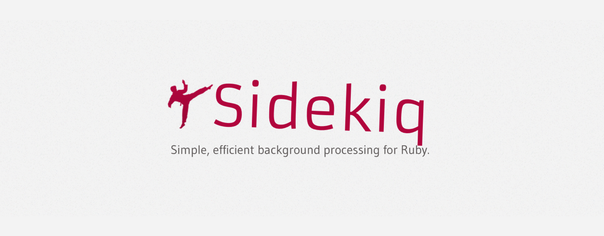
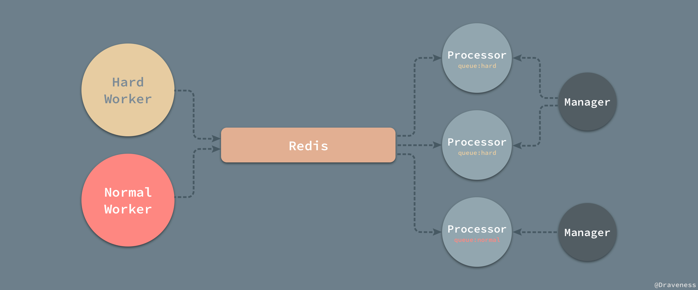
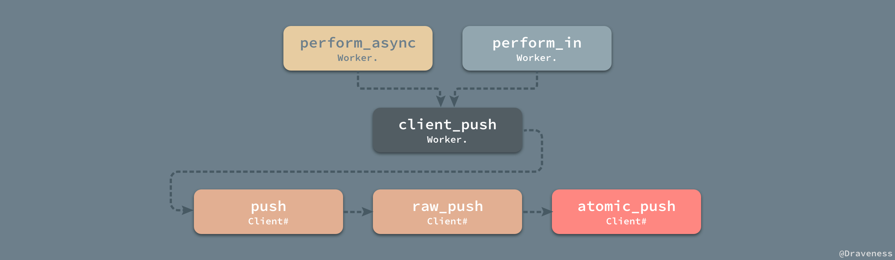
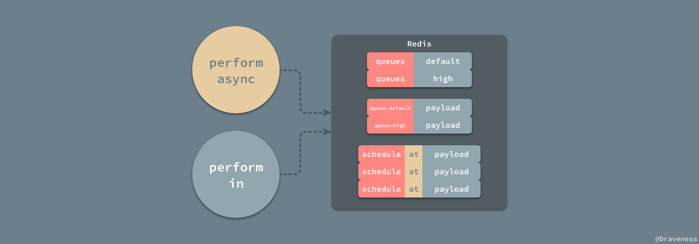
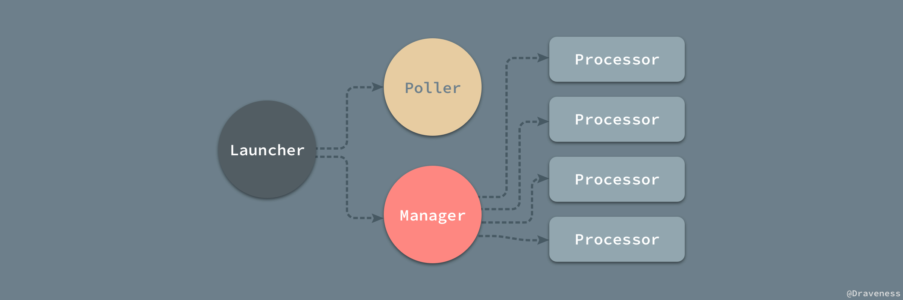
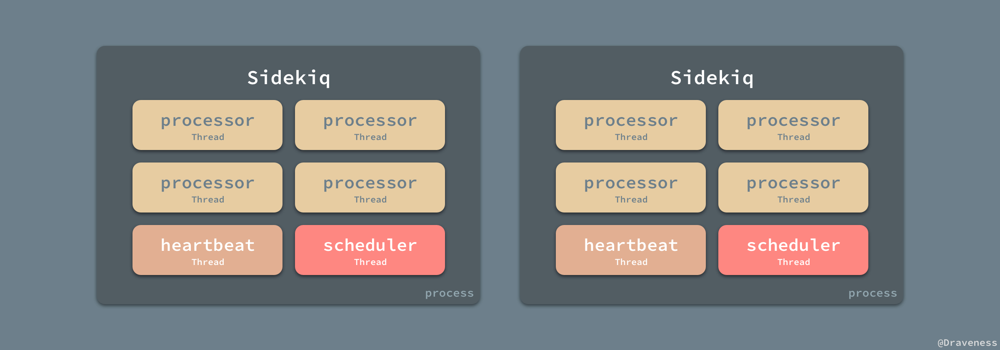
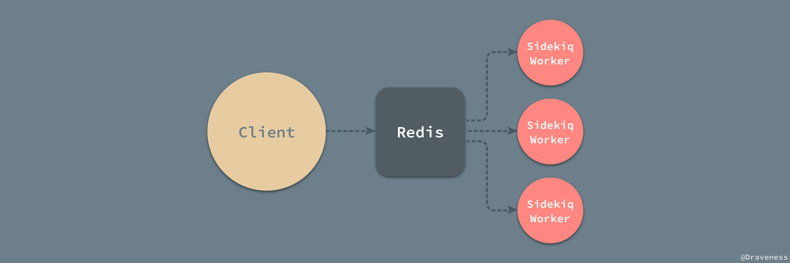
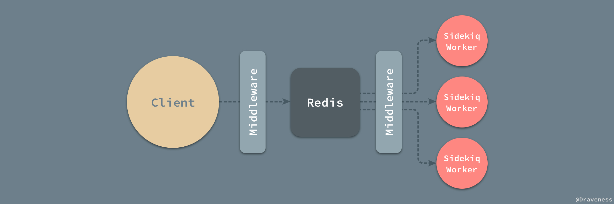
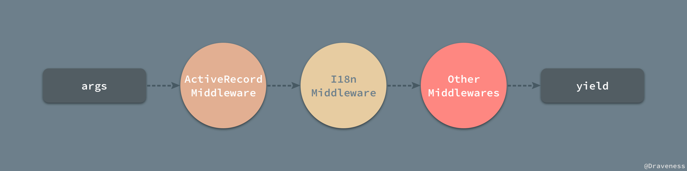

<!DOCTYPE HTML>
<html lang="" >
    <head>
        <meta charset="UTF-8">
        <meta content="text/html; charset=utf-8" http-equiv="Content-Type">
        <title>Ruby · GitBook</title>
        <meta http-equiv="X-UA-Compatible" content="IE=edge" />
        <meta name="description" content="">
        <meta name="generator" content="GitBook 3.2.3">
        
        
        
    
    <link rel="stylesheet" href="../../gitbook/style.css">

    
            
                
                <link rel="stylesheet" href="../../gitbook/gitbook-plugin-highlight/website.css">
                
            
                
                <link rel="stylesheet" href="../../gitbook/gitbook-plugin-search/search.css">
                
            
                
                <link rel="stylesheet" href="../../gitbook/gitbook-plugin-fontsettings/website.css">
                
            
        

    

    
        
    
        
    
        
    
        
    
        
    
        
    

        
    
    
    <meta name="HandheldFriendly" content="true"/>
    <meta name="viewport" content="width=device-width, initial-scale=1, user-scalable=no">
    <meta name="apple-mobile-web-app-capable" content="yes">
    <meta name="apple-mobile-web-app-status-bar-style" content="black">
    <link rel="apple-touch-icon-precomposed" sizes="152x152" href="../../gitbook/images/apple-touch-icon-precomposed-152.png">
    <link rel="shortcut icon" href="../../gitbook/images/favicon.ico" type="image/x-icon">

    
    <link rel="next" href="../SDWebImage/" />
    
    
    <link rel="prev" href="../Redis/redis-io-multiplexing.html" />
    

    </head>
    <body>
        
<div class="book">
    <div class="book-summary">
        
            
<div id="book-search-input" role="search">
    <input type="text" placeholder="Type to search" />
</div>

            
                <nav role="navigation">
                


<ul class="summary">
    
    

    

    
        
        
    
        <li class="chapter " data-level="1.1" data-path="../../">
            
                <a href="../../">
            
                    
                    iOS 开发
            
                </a>
            

            
            <ul class="articles">
                
    
        <li class="chapter " data-level="1.1.1" data-path="../../ObjC-Basic/">
            
                <a href="../../ObjC-Basic/">
            
                    
                    Objective-C 语言基础
            
                </a>
            

            
            <ul class="articles">
                
    
        <li class="chapter " data-level="1.1.1.1" data-path="../../ObjC-Basic/Class.html">
            
                <a href="../../ObjC-Basic/Class.html">
            
                    
                    类与对象
            
                </a>
            

            
        </li>
    
        <li class="chapter " data-level="1.1.1.2" data-path="../../ObjC-Basic/Block.html">
            
                <a href="../../ObjC-Basic/Block.html">
            
                    
                    Block 编程
            
                </a>
            

            
        </li>
    
        <li class="chapter " data-level="1.1.1.3" data-path="../../ObjC-Basic/Runtime.html">
            
                <a href="../../ObjC-Basic/Runtime.html">
            
                    
                    Objective-C Runtime
            
                </a>
            

            
        </li>
    
        <li class="chapter " data-level="1.1.1.4" data-path="../../ObjC-Basic/MM.html">
            
                <a href="../../ObjC-Basic/MM.html">
            
                    
                    Objective-C 内存管理
            
                </a>
            

            
        </li>
    
        <li class="chapter " data-level="1.1.1.5" data-path="../../ObjC-Basic/Runloop.html">
            
                <a href="../../ObjC-Basic/Runloop.html">
            
                    
                    Runloop
            
                </a>
            

            
        </li>
    

            </ul>
            
        </li>
    
        <li class="chapter " data-level="1.1.2" data-path="../../Cocoa-Touch/">
            
                <a href="../../Cocoa-Touch/">
            
                    
                    Cocoa Touch
            
                </a>
            

            
            <ul class="articles">
                
    
        <li class="chapter " data-level="1.1.2.1" data-path="../../Cocoa-Touch/Event-Handling.html">
            
                <a href="../../Cocoa-Touch/Event-Handling.html">
            
                    
                    事件处理
            
                </a>
            

            
        </li>
    
        <li class="chapter " data-level="1.1.2.2" data-path="../../Cocoa-Touch/UIApplication.html">
            
                <a href="../../Cocoa-Touch/UIApplication.html">
            
                    
                    UIApplication
            
                </a>
            

            
        </li>
    
        <li class="chapter " data-level="1.1.2.3" data-path="../../Cocoa-Touch/UIView-Basic.html">
            
                <a href="../../Cocoa-Touch/UIView-Basic.html">
            
                    
                    UIView
            
                </a>
            

            
        </li>
    
        <li class="chapter " data-level="1.1.2.4" data-path="../../Cocoa-Touch/UIViewController.html">
            
                <a href="../../Cocoa-Touch/UIViewController.html">
            
                    
                    UIViewController
            
                </a>
            

            
        </li>
    
        <li class="chapter " data-level="1.1.2.5" data-path="../../Cocoa-Touch/Animation.html">
            
                <a href="../../Cocoa-Touch/Animation.html">
            
                    
                    动画
            
                </a>
            

            
        </li>
    
        <li class="chapter " data-level="1.1.2.6" data-path="../../Cocoa-Touch/Network.html">
            
                <a href="../../Cocoa-Touch/Network.html">
            
                    
                    网络编程
            
                </a>
            

            
        </li>
    
        <li class="chapter " data-level="1.1.2.7" data-path="../../Cocoa-Touch/Multithreading.html">
            
                <a href="../../Cocoa-Touch/Multithreading.html">
            
                    
                    并发编程
            
                </a>
            

            
        </li>
    
        <li class="chapter " data-level="1.1.2.8" data-path="../../Cocoa-Touch/File-System.html">
            
                <a href="../../Cocoa-Touch/File-System.html">
            
                    
                    文件系统
            
                </a>
            

            
        </li>
    
        <li class="chapter " data-level="1.1.2.9" data-path="../../Cocoa-Touch/Design.html">
            
                <a href="../../Cocoa-Touch/Design.html">
            
                    
                    设计模式
            
                </a>
            

            
        </li>
    
        <li class="chapter " data-level="1.1.2.10" data-path="../../Cocoa-Touch/Performance.html">
            
                <a href="../../Cocoa-Touch/Performance.html">
            
                    
                    性能
            
                </a>
            

            
        </li>
    

            </ul>
            
        </li>
    
        <li class="chapter " data-level="1.1.3" data-path="../../Swift/">
            
                <a href="../../Swift/">
            
                    
                    Swift
            
                </a>
            

            
            <ul class="articles">
                
    
        <li class="chapter " data-level="1.1.3.1" data-path="../../Swift/Class.html">
            
                <a href="../../Swift/Class.html">
            
                    
                    类与对象
            
                </a>
            

            
        </li>
    
        <li class="chapter " data-level="1.1.3.2" data-path="../../Swift/Struct-And-Enum.html">
            
                <a href="../../Swift/Struct-And-Enum.html">
            
                    
                    结构体与枚举
            
                </a>
            

            
        </li>
    
        <li class="chapter " data-level="1.1.3.3" data-path="../../Swift/Function-And-Closure.html">
            
                <a href="../../Swift/Function-And-Closure.html">
            
                    
                    函数与闭包
            
                </a>
            

            
        </li>
    

            </ul>
            
        </li>
    
        <li class="chapter " data-level="1.1.4" data-path="../../Interview/">
            
                <a href="../../Interview/">
            
                    
                    面试问题
            
                </a>
            

            
            <ul class="articles">
                
    
        <li class="chapter " data-level="1.1.4.1" data-path="../../Interview/iOSInterviewQuestions/">
            
                <a href="../../Interview/iOSInterviewQuestions/">
            
                    
                    《招聘一个靠谱的iOS》
            
                </a>
            

            
            <ul class="articles">
                
    
        <li class="chapter " data-level="1.1.4.1.1" data-path="../../Interview/iOSInterviewQuestions/Volume-One/volume-one.html">
            
                <a href="../../Interview/iOSInterviewQuestions/Volume-One/volume-one.html">
            
                    
                    《招聘一个靠谱的iOS》(上)
            
                </a>
            

            
        </li>
    
        <li class="chapter " data-level="1.1.4.1.2" data-path="../../Interview/iOSInterviewQuestions/Volume-Two/volume-two.html">
            
                <a href="../../Interview/iOSInterviewQuestions/Volume-Two/volume-two.html">
            
                    
                    《招聘一个靠谱的iOS》(下)
            
                </a>
            

            
        </li>
    

            </ul>
            
        </li>
    
        <li class="chapter " data-level="1.1.4.2" data-path="../../interview/ZhiHu-QA/">
            
                <a href="../../interview/ZhiHu-QA/">
            
                    
                    关于一些 iOS 面试问题的解答
            
                </a>
            

            
        </li>
    
        <li class="chapter " data-level="1.1.4.3" data-path="../../interview/iOSDeveloperQA/">
            
                <a href="../../interview/iOSDeveloperQA/">
            
                    
                    iOS 开发面试问题
            
                </a>
            

            
        </li>
    
        <li class="chapter " data-level="1.1.4.4" data-path="../../interview/MXR-QA/">
            
                <a href="../../interview/MXR-QA/">
            
                    
                    MXR 面试问题
            
                </a>
            

            
        </li>
    

            </ul>
            
        </li>
    
        <li class="chapter " data-level="1.1.5" data-path="../">
            
                <a href="../">
            
                    
                    源码分析
            
                </a>
            

            
            <ul class="articles">
                
    
        <li class="chapter " data-level="1.1.5.1" data-path="../AFNetworking/AFNetworking_1.html">
            
                <a href="../AFNetworking/AFNetworking_1.html">
            
                    
                    AFNetworking
            
                </a>
            

            
            <ul class="articles">
                
    
        <li class="chapter " data-level="1.1.5.1.1" data-path="../AFNetworking/AFNetworking_2.html">
            
                <a href="../AFNetworking/AFNetworking_2.html">
            
                    
                    AFURLSessionManager
            
                </a>
            

            
        </li>
    
        <li class="chapter " data-level="1.1.5.1.2" data-path="../AFNetworking/AFNetworking_3.html">
            
                <a href="../AFNetworking/AFNetworking_3.html">
            
                    
                    AFURLSerialization
            
                </a>
            

            
        </li>
    
        <li class="chapter " data-level="1.1.5.1.3" data-path="../AFNetworking/AFNetworking_4.html">
            
                <a href="../AFNetworking/AFNetworking_4.html">
            
                    
                    AFNetworkReachabilityManager
            
                </a>
            

            
        </li>
    
        <li class="chapter " data-level="1.1.5.1.4" data-path="../AFNetworking/AFNetworking_5.html">
            
                <a href="../AFNetworking/AFNetworking_5.html">
            
                    
                    HTTPS
            
                </a>
            

            
        </li>
    

            </ul>
            
        </li>
    
        <li class="chapter " data-level="1.1.5.2" data-path="../Alamofire/">
            
                <a href="../Alamofire/">
            
                    
                    Alamofire
            
                </a>
            

            
        </li>
    
        <li class="chapter " data-level="1.1.5.3" data-path="../architecture/mvx.html">
            
                <a href="../architecture/mvx.html">
            
                    
                    architecture
            
                </a>
            

            
            <ul class="articles">
                
    
        <li class="chapter " data-level="1.1.5.3.1" data-path="../architecture/mvx-model.html">
            
                <a href="../architecture/mvx-model.html">
            
                    
                    MVX-Model
            
                </a>
            

            
        </li>
    
        <li class="chapter " data-level="1.1.5.3.2" data-path="../architecture/mvx-view.html">
            
                <a href="../architecture/mvx-view.html">
            
                    
                    MVX-View
            
                </a>
            

            
        </li>
    
        <li class="chapter " data-level="1.1.5.3.3" data-path="../architecture/mvx-controller.html">
            
                <a href="../architecture/mvx-controller.html">
            
                    
                    MVX-Controller
            
                </a>
            

            
        </li>
    

            </ul>
            
        </li>
    
        <li class="chapter " data-level="1.1.5.4" >
            
                <span>
            
                    
                    AsyncDisplayKit
            
                </span>
            

            
            <ul class="articles">
                
    
        <li class="chapter " data-level="1.1.5.4.1" data-path="../AsyncDisplayKit/ASDK_1.html">
            
                <a href="../AsyncDisplayKit/ASDK_1.html">
            
                    
                    提升界面的渲染性能
            
                </a>
            

            
        </li>
    
        <li class="chapter " data-level="1.1.5.4.2" data-path="../AsyncDisplayKit/ASDK_2.html">
            
                <a href="../AsyncDisplayKit/ASDK_2.html">
            
                    
                    布局算法
            
                </a>
            

            
        </li>
    
        <li class="chapter " data-level="1.1.5.4.3" data-path="../AsyncDisplayKit/ASDK_3.html">
            
                <a href="../AsyncDisplayKit/ASDK_3.html">
            
                    
                    预加载与智能预加载
            
                </a>
            

            
        </li>
    

            </ul>
            
        </li>
    
        <li class="chapter " data-level="1.1.5.5" >
            
                <span>
            
                    
                    BlocksKit
            
                </span>
            

            
            <ul class="articles">
                
    
        <li class="chapter " data-level="1.1.5.5.1" data-path="../BlocksKit/BlocksKit_1.html">
            
                <a href="../BlocksKit/BlocksKit_1.html">
            
                    
                    神奇的 BlocksKit (一)
            
                </a>
            

            
        </li>
    
        <li class="chapter " data-level="1.1.5.5.2" data-path="../BlocksKit/BlocksKit_2.html">
            
                <a href="../BlocksKit/BlocksKit_2.html">
            
                    
                    神奇的 BlocksKit (二)
            
                </a>
            

            
        </li>
    

            </ul>
            
        </li>
    
        <li class="chapter " data-level="1.1.5.6" data-path="../Blog/initialize-comments.html">
            
                <a href="../Blog/initialize-comments.html">
            
                    
                    Gitalk/Gitment
            
                </a>
            

            
        </li>
    
        <li class="chapter " data-level="1.1.5.7" >
            
                <span>
            
                    
                    CocoaPods
            
                </span>
            

            
            <ul class="articles">
                
    
        <li class="chapter " data-level="1.1.5.7.1" data-path="../CocoaPods/CocoaPods.html">
            
                <a href="../CocoaPods/CocoaPods.html">
            
                    
                    CocoaPods 都做了什么
            
                </a>
            

            
        </li>
    
        <li class="chapter " data-level="1.1.5.7.2" data-path="../CocoaPods/DSL.html">
            
                <a href="../CocoaPods/DSL.html">
            
                    
                    DSL 以及 DSL 的应用
            
                </a>
            

            
        </li>
    

            </ul>
            
        </li>
    
        <li class="chapter " data-level="1.1.5.8" >
            
                <span>
            
                    
                    Database
            
                </span>
            

            
            <ul class="articles">
                
    
        <li class="chapter " data-level="1.1.5.8.1" data-path="../Database/concurrency-control.html">
            
                <a href="../Database/concurrency-control.html">
            
                    
                    数据库并发控制
            
                </a>
            

            
        </li>
    
        <li class="chapter " data-level="1.1.5.8.2" data-path="../Database/dynamo.html">
            
                <a href="../Database/dynamo.html">
            
                    
                    分布式键值存储 Dynamo
            
                </a>
            

            
        </li>
    
        <li class="chapter " data-level="1.1.5.8.3" data-path="../Database/leveldb-bigtable.html">
            
                <a href="../Database/leveldb-bigtable.html">
            
                    
                    Bigtable 和 LevelDB 的实现
            
                </a>
            

            
        </li>
    
        <li class="chapter " data-level="1.1.5.8.4" data-path="../Database/mongodb-to-mysql.html">
            
                <a href="../Database/mongodb-to-mysql.html">
            
                    
                    MongoDB 迁移到 MySQL
            
                </a>
            

            
        </li>
    
        <li class="chapter " data-level="1.1.5.8.5" data-path="../Database/mongodb-wiredtiger.html">
            
                <a href="../Database/mongodb-wiredtiger.html">
            
                    
                    MongoDB 和 WiredTiger
            
                </a>
            

            
        </li>
    
        <li class="chapter " data-level="1.1.5.8.6" data-path="../Database/mysql.html">
            
                <a href="../Database/mysql.html">
            
                    
                    MySQL 和 InnoDB
            
                </a>
            

            
        </li>
    
        <li class="chapter " data-level="1.1.5.8.7" data-path="../Database/sql-index-intro.html">
            
                <a href="../Database/sql-index-intro.html">
            
                    
                    MySQL 索引设计概要
            
                </a>
            

            
        </li>
    
        <li class="chapter " data-level="1.1.5.8.8" data-path="../Database/sql-index-performance.html">
            
                <a href="../Database/sql-index-performance.html">
            
                    
                    MySQL 索引性能分析概要
            
                </a>
            

            
        </li>
    
        <li class="chapter " data-level="1.1.5.8.9" data-path="../Database/transaction.html">
            
                <a href="../Database/transaction.html">
            
                    
                    MySQL 中事务的实现
            
                </a>
            

            
        </li>
    

            </ul>
            
        </li>
    
        <li class="chapter " data-level="1.1.5.9" data-path="../DKNightVersion/DKNightVersion.html">
            
                <a href="../DKNightVersion/DKNightVersion.html">
            
                    
                    DKNightVersion
            
                </a>
            

            
        </li>
    
        <li class="chapter " data-level="1.1.5.10" >
            
                <span>
            
                    
                    FBRetainCycleDetector
            
                </span>
            

            
            <ul class="articles">
                
    
        <li class="chapter " data-level="1.1.5.10.1" data-path="../FBRetainCycleDetector/block.html">
            
                <a href="../FBRetainCycleDetector/block.html">
            
                    
                    block 如何持有对象
            
                </a>
            

            
        </li>
    
        <li class="chapter " data-level="1.1.5.10.2" data-path="../FBRetainCycleDetector/Obj-Associated.html">
            
                <a href="../FBRetainCycleDetector/Obj-Associated.html">
            
                    
                    Associated Object
            
                </a>
            

            
        </li>
    
        <li class="chapter " data-level="1.1.5.10.3" data-path="../FBRetainCycleDetector/Obj-Strong.html">
            
                <a href="../FBRetainCycleDetector/Obj-Strong.html">
            
                    
                    对象持有的强指针
            
                </a>
            

            
        </li>
    
        <li class="chapter " data-level="1.1.5.10.4" data-path="../FBRetainCycleDetector/retain_cycle.html">
            
                <a href="../FBRetainCycleDetector/retain_cycle.html">
            
                    
                    解决循环引用
            
                </a>
            

            
        </li>
    

            </ul>
            
        </li>
    
        <li class="chapter " data-level="1.1.5.11" data-path="../fishhook/fishhook.html">
            
                <a href="../fishhook/fishhook.html">
            
                    
                    fishhook
            
                </a>
            

            
        </li>
    
        <li class="chapter " data-level="1.1.5.12" data-path="../IQKeyboardManager/IQKeyboardManager.html">
            
                <a href="../IQKeyboardManager/IQKeyboardManager.html">
            
                    
                    IQKeyboardManager
            
                </a>
            

            
        </li>
    
        <li class="chapter " data-level="1.1.5.13" data-path="../KVOController/KVOController.html">
            
                <a href="../KVOController/KVOController.html">
            
                    
                    KVOController
            
                </a>
            

            
        </li>
    
        <li class="chapter " data-level="1.1.5.14" data-path="../libextobjc/libextobjc.html">
            
                <a href="../libextobjc/libextobjc.html">
            
                    
                    libextobjc
            
                </a>
            

            
        </li>
    
        <li class="chapter " data-level="1.1.5.15" data-path="../Masonry/Masonry.html">
            
                <a href="../Masonry/Masonry.html">
            
                    
                    Masonry
            
                </a>
            

            
        </li>
    
        <li class="chapter " data-level="1.1.5.16" data-path="../MBProgressHUD/">
            
                <a href="../MBProgressHUD/">
            
                    
                    MBProgressHUD
            
                </a>
            

            
        </li>
    
        <li class="chapter " data-level="1.1.5.17" data-path="../objc/">
            
                <a href="../objc/">
            
                    
                    objc
            
                </a>
            

            
            <ul class="articles">
                
    
        <li class="chapter " data-level="1.1.5.17.1" data-path="../objc/associated-obj.html">
            
                <a href="../objc/associated-obj.html">
            
                    
                    关联对象 AssociatedObject
            
                </a>
            

            
        </li>
    
        <li class="chapter " data-level="1.1.5.17.2" data-path="../objc/autoreleasepool.html">
            
                <a href="../objc/autoreleasepool.html">
            
                    
                    自动释放池
            
                </a>
            

            
        </li>
    
        <li class="chapter " data-level="1.1.5.17.3" data-path="../objc/black-box-retain-release.html">
            
                <a href="../objc/black-box-retain-release.html">
            
                    
                    黑箱中的 retain 和 release
            
                </a>
            

            
        </li>
    
        <li class="chapter " data-level="1.1.5.17.4" data-path="../objc/func-structure.html">
            
                <a href="../objc/func-structure.html">
            
                    
                    ObjC 中方法的结构
            
                </a>
            

            
        </li>
    
        <li class="chapter " data-level="1.1.5.17.5" data-path="../objc/hash.html">
            
                <a href="../objc/hash.html">
            
                    
                    哈希表的实现
            
                </a>
            

            
        </li>
    
        <li class="chapter " data-level="1.1.5.17.6" data-path="../objc/initialization.html">
            
                <a href="../objc/initialization.html">
            
                    
                    初始化对象
            
                </a>
            

            
        </li>
    
        <li class="chapter " data-level="1.1.5.17.7" data-path="../objc/isa.html">
            
                <a href="../objc/isa.html">
            
                    
                    isa
            
                </a>
            

            
        </li>
    
        <li class="chapter " data-level="1.1.5.17.8" data-path="../objc/lazy-initialize.html">
            
                <a href="../objc/lazy-initialize.html">
            
                    
                    懒惰的 initialize 方法
            
                </a>
            

            
        </li>
    
        <li class="chapter " data-level="1.1.5.17.9" data-path="../objc/load.html">
            
                <a href="../objc/load.html">
            
                    
                    load 方法
            
                </a>
            

            
        </li>
    
        <li class="chapter " data-level="1.1.5.17.10" data-path="../objc/msgSend.html">
            
                <a href="../objc/msgSend.html">
            
                    
                    消息传递
            
                </a>
            

            
        </li>
    

            </ul>
            
        </li>
    
        <li class="chapter " data-level="1.1.5.18" >
            
                <span>
            
                    
                    OHHTTPStubs
            
                </span>
            

            
            <ul class="articles">
                
    
        <li class="chapter " data-level="1.1.5.18.1" data-path="../OHHTTPStubs/intercept.html">
            
                <a href="../OHHTTPStubs/intercept.html">
            
                    
                    HTTP Intercept
            
                </a>
            

            
        </li>
    
        <li class="chapter " data-level="1.1.5.18.2" data-path="../OHHTTPStubs/mock.html">
            
                <a href="../OHHTTPStubs/mock.html">
            
                    
                    HTTP Mock
            
                </a>
            

            
        </li>
    

            </ul>
            
        </li>
    
        <li class="chapter " data-level="1.1.5.19" data-path="../ProtocolKit/ProtocolKit.html">
            
                <a href="../ProtocolKit/ProtocolKit.html">
            
                    
                    ProtocolKit
            
                </a>
            

            
        </li>
    
        <li class="chapter " data-level="1.1.5.20" data-path="../rack/rack.html">
            
                <a href="../rack/rack.html">
            
                    
                    rack
            
                </a>
            

            
            <ul class="articles">
                
    
        <li class="chapter " data-level="1.1.5.20.1" data-path="../rack/rack-thin.html">
            
                <a href="../rack/rack-thin.html">
            
                    
                    Thin 的事件驱动模型
            
                </a>
            

            
        </li>
    
        <li class="chapter " data-level="1.1.5.20.2" data-path="../rack/rack-unicorn.html">
            
                <a href="../rack/rack-unicorn.html">
            
                    
                    Unicorn 的多进程模型
            
                </a>
            

            
        </li>
    
        <li class="chapter " data-level="1.1.5.20.3" data-path="../rack/rack-webrik.html">
            
                <a href="../rack/rack-webrik.html">
            
                    
                    WEBrick 的实现
            
                </a>
            

            
        </li>
    

            </ul>
            
        </li>
    
        <li class="chapter " data-level="1.1.5.21" data-path="../Rails/activerecord.html">
            
                <a href="../Rails/activerecord.html">
            
                    
                    Rails
            
                </a>
            

            
        </li>
    
        <li class="chapter " data-level="1.1.5.22" >
            
                <span>
            
                    
                    ReactiveObjC
            
                </span>
            

            
            <ul class="articles">
                
    
        <li class="chapter " data-level="1.1.5.22.1" data-path="../ReactiveObjC/RACChannel.html">
            
                <a href="../ReactiveObjC/RACChannel.html">
            
                    
                    RACChannel
            
                </a>
            

            
        </li>
    
        <li class="chapter " data-level="1.1.5.22.2" data-path="../ReactiveObjC/RACCommand.html">
            
                <a href="../ReactiveObjC/RACCommand.html">
            
                    
                    RACCommand
            
                </a>
            

            
        </li>
    
        <li class="chapter " data-level="1.1.5.22.3" data-path="../ReactiveObjC/RACDelegateProxy.html">
            
                <a href="../ReactiveObjC/RACDelegateProxy.html">
            
                    
                    RACDelegateProxy
            
                </a>
            

            
        </li>
    
        <li class="chapter " data-level="1.1.5.22.4" data-path="../ReactiveObjC/RACMulticastConnection.html">
            
                <a href="../ReactiveObjC/RACMulticastConnection.html">
            
                    
                    RACMulticastConnection
            
                </a>
            

            
        </li>
    
        <li class="chapter " data-level="1.1.5.22.5" data-path="../ReactiveObjC/RACScheduler.html">
            
                <a href="../ReactiveObjC/RACScheduler.html">
            
                    
                    RACScheduler
            
                </a>
            

            
        </li>
    
        <li class="chapter " data-level="1.1.5.22.6" data-path="../ReactiveObjC/RACSequence.html">
            
                <a href="../ReactiveObjC/RACSequence.html">
            
                    
                    RACSequence
            
                </a>
            

            
        </li>
    
        <li class="chapter " data-level="1.1.5.22.7" data-path="../ReactiveObjC/RACSignal.html">
            
                <a href="../ReactiveObjC/RACSignal.html">
            
                    
                    RACSignal
            
                </a>
            

            
        </li>
    
        <li class="chapter " data-level="1.1.5.22.8" data-path="../ReactiveObjC/RACSubject.html">
            
                <a href="../ReactiveObjC/RACSubject.html">
            
                    
                    RACSubject
            
                </a>
            

            
        </li>
    

            </ul>
            
        </li>
    
        <li class="chapter " data-level="1.1.5.23" >
            
                <span>
            
                    
                    Redis
            
                </span>
            

            
            <ul class="articles">
                
    
        <li class="chapter " data-level="1.1.5.23.1" data-path="../Redis/redis-cli.html">
            
                <a href="../Redis/redis-cli.html">
            
                    
                    命令处理
            
                </a>
            

            
        </li>
    
        <li class="chapter " data-level="1.1.5.23.2" data-path="../Redis/redis-eventloop.html">
            
                <a href="../Redis/redis-eventloop.html">
            
                    
                    事件循环
            
                </a>
            

            
        </li>
    
        <li class="chapter " data-level="1.1.5.23.3" data-path="../Redis/redis-io-multiplexing.html">
            
                <a href="../Redis/redis-io-multiplexing.html">
            
                    
                    I/O 多路复用
            
                </a>
            

            
        </li>
    

            </ul>
            
        </li>
    
        <li class="chapter active" data-level="1.1.5.24" data-path="Ruby.html">
            
                <a href="Ruby.html">
            
                    
                    Ruby
            
                </a>
            

            
        </li>
    
        <li class="chapter " data-level="1.1.5.25" data-path="../SDWebImage/">
            
                <a href="../SDWebImage/">
            
                    
                    SDWebImage
            
                </a>
            

            
        </li>
    

            </ul>
            
        </li>
    
        <li class="chapter " data-level="1.1.6" data-path="../../More.html">
            
                <a href="../../More.html">
            
                    
                    更多资料
            
                </a>
            

            
        </li>
    

            </ul>
            
        </li>
    

    

    <li class="divider"></li>

    <li>
        <a href="https://www.gitbook.com" target="blank" class="gitbook-link">
            Published with GitBook
        </a>
    </li>
</ul>


                </nav>
            
        
    </div>

    <div class="book-body">
        
            <div class="body-inner">
                
                    

<div class="book-header" role="navigation">
    

    <!-- Title -->
    <h1>
        <i class="fa fa-circle-o-notch fa-spin"></i>
        <a href="../.." >Ruby</a>
    </h1>
</div>


                    <div class="page-wrapper" tabindex="-1" role="main">
                        <div class="page-inner">
                            
<div id="book-search-results">
    <div class="search-noresults">
    
                                <section class="normal markdown-section">
                                
                                <h1 id="sidekiq-&#x5982;&#x4F55;&#x5904;&#x7406;&#x5F02;&#x6B65;&#x4EFB;&#x52A1;">Sidekiq &#x5982;&#x4F55;&#x5904;&#x7406;&#x5F02;&#x6B65;&#x4EFB;&#x52A1;</h1>
<p><a href="https://github.com/mperham/sidekiq" target="_blank">Sidekiq</a> &#x662F; Ruby &#x548C; Rails &#x9879;&#x76EE;&#x4E2D;&#x5E38;&#x7528;&#x7684;&#x540E;&#x53F0;&#x4EFB;&#x52A1;&#x5904;&#x7406;&#x7CFB;&#x7EDF;&#xFF0C;&#x5176;&#x672C;&#x8EAB;&#x63D0;&#x4F9B;&#x7684; API &#x5341;&#x5206;&#x7B80;&#x6D01;&#xFF0C;&#x6E90;&#x4EE3;&#x7801;&#x4E5F;&#x975E;&#x5E38;&#x6613;&#x4E8E;&#x9605;&#x8BFB;&#xFF0C;&#x662F;&#x4E00;&#x4E2A;&#x8F7B;&#x91CF;&#x7EA7;&#x7684;&#x5F02;&#x6B65;&#x5904;&#x7406;&#x7EC4;&#x4EF6;&#xFF1B;&#x867D;&#x7136;&#x5176;&#x672C;&#x8EAB;&#x6CA1;&#x6709;&#x63D0;&#x4F9B;&#x592A;&#x591A;&#x590D;&#x6742;&#x7684;&#x529F;&#x80FD;&#xFF0C;&#x4F46;&#x662F;&#x5B83;&#x7684;&#x4F7F;&#x7528;&#x548C;&#x90E8;&#x7F72;&#x975E;&#x5E38;&#x7B80;&#x5355;&#x3002;&#x5728;&#x8FD9;&#x7BC7;&#x6587;&#x7AE0;&#x4E2D;&#xFF0C;&#x6211;&#x4EEC;&#x5C06;&#x5BF9; Sidekiq &#x7684;&#x5B9E;&#x73B0;&#x539F;&#x7406;&#x8FDB;&#x884C;&#x4ECB;&#x7ECD;&#x548C;&#x5206;&#x6790;&#x3002;</p>
<p></p>
<p>&#x6587;&#x7AE0;&#x4E2D;&#x5E76;&#x4E0D;&#x4F1A;&#x8BE6;&#x7EC6;&#x4ECB;&#x7ECD; Sidekiq &#x7684;&#x4F7F;&#x7528;&#xFF0C;&#x4E5F;&#x5E76;&#x4E0D;&#x662F;&#x4E00;&#x7BC7; Sidekiq &#x7684;&#x6559;&#x7A0B;&#xFF0C;&#x5728;&#x8FD9;&#x91CC;&#x6211;&#x4EEC;&#x4F1A;&#x4ECB;&#x7ECD;&#x4EFB;&#x52A1;&#x7684;&#x5165;&#x961F;&#x8FC7;&#x7A0B;&#x3001;Sidekiq &#x4EFB;&#x52A1;&#x5728; Redis &#x4E2D;&#x7684;&#x5B58;&#x50A8;&#x65B9;&#x5F0F;&#x548C;&#x6D88;&#x8D39;&#x8005;&#x5BF9;&#x4EFB;&#x52A1;&#x7684;&#x5904;&#x7406;&#x8FC7;&#x7A0B;&#xFF0C;&#x9664;&#x6B64;&#x4E4B;&#x5916;&#xFF0C;&#x6587;&#x7AE0;&#x5C06;&#x4ECB;&#x7ECD; Sidekiq &#x4E2D;&#x95F4;&#x4EF6;&#x7684;&#x5B9E;&#x73B0;&#x4EE5;&#x53CA;&#x4EFB;&#x52A1;&#x91CD;&#x8BD5;&#x7684;&#x539F;&#x7406;&#x3002;</p>
<h2 id="&#x6982;&#x8FF0;">&#x6982;&#x8FF0;</h2>
<p>&#x5728;&#x5177;&#x4F53;&#x5206;&#x6790;&#x4ECB;&#x7ECD; Sidekiq &#x7684;&#x5B9E;&#x73B0;&#x539F;&#x7406;&#x4E4B;&#x524D;&#xFF0C;&#x6211;&#x4EEC;&#x9700;&#x8981;&#x5BF9;&#x6574;&#x4E2A;&#x7EC4;&#x4EF6;&#x7684;&#x4F7F;&#x7528;&#x8FC7;&#x7A0B;&#x8FDB;&#x884C;&#x6982;&#x8FF0;&#xFF0C;&#x4FDD;&#x8BC1;&#x6211;&#x4EEC;&#x5BF9; Sidekiq &#x7684;&#x7ED3;&#x6784;&#x6709;&#x4E00;&#x4E2A;&#x603B;&#x4F53;&#x4E0A;&#x7684;&#x4E86;&#x89E3;&#x3002;</p>
<pre><code class="lang-ruby"><span class="hljs-class"><span class="hljs-keyword">class</span> <span class="hljs-title">HardWorker</span></span>
  <span class="hljs-keyword">include</span> <span class="hljs-symbol">Sidekiq:</span><span class="hljs-symbol">:Worker</span>
  <span class="hljs-function"><span class="hljs-keyword">def</span> <span class="hljs-title">perform</span><span class="hljs-params">(name, count)</span></span>
    <span class="hljs-comment"># do something</span>
  <span class="hljs-keyword">end</span>
<span class="hljs-keyword">end</span>

HardWorker.perform_async(<span class="hljs-string">&apos;bob&apos;</span>, <span class="hljs-number">5</span>)
</code></pre>
<p>&#x5728;&#x8FD9;&#x91CC;&#xFF0C;&#x6211;&#x4EEC;&#x76F4;&#x63A5;&#x7167;&#x642C; Sidekiq Wiki &#x4E2D; <a href="https://github.com/mperham/sidekiq/wiki/Getting-Started" target="_blank">Getting Started</a> &#x90E8;&#x5206;&#x7684;&#x4EE3;&#x7801;&#x7B80;&#x5355;&#x5C55;&#x793A;&#x4E0B;&#x5B83;&#x662F;&#x5982;&#x4F55;&#x4F7F;&#x7528;&#x7684;&#xFF0C;&#x5F53;&#x6211;&#x4EEC;&#x6267;&#x884C; <code>HardWorker.perform_async</code> &#x65B9;&#x6CD5;&#x65F6;&#xFF0C;Sidekiq &#x7684; Worker &#x4F1A;&#x5C06;&#x4E00;&#x4E2A;&#x5F02;&#x6B65;&#x4EFB;&#x52A1;&#x4EE5; JSON &#x7684;&#x5F62;&#x5F0F;&#x5C06;&#x76F8;&#x5173;&#x7684;&#x4FE1;&#x606F;&#x52A0;&#x5165; Redis &#x4E2D;&#x5E76;&#x7B49;&#x5F85;&#x6D88;&#x8D39;&#x8005;&#x5BF9;&#x4EFB;&#x52A1;&#x7684;&#x62C9;&#x53D6;&#x548C;&#x5904;&#x7406;&#x3002;</p>
<p></p>
<p>Sidekiq &#x7684;&#x6D88;&#x8D39;&#x8005;&#x6709;&#x4E09;&#x4E2A;&#x90E8;&#x5206;&#x7EC4;&#x6210;&#xFF0C;&#x5206;&#x522B;&#x662F; <code>Manager</code>&#x3001;<code>Processor</code> &#x548C; <code>Poller</code>&#xFF1B;&#x4ED6;&#x4EEC;&#x4E09;&#x8005;&#x4F1A;&#x76F8;&#x4E92;&#x534F;&#x4F5C;&#x5171;&#x540C;&#x5B8C;&#x6210;&#x5BF9; Redis &#x4E2D;&#x4EFB;&#x52A1;&#x6D88;&#x8D39;&#x7684;&#x8FC7;&#x7A0B;&#x3002;</p>
<blockquote>
<p>&#x9700;&#x8981;&#x6CE8;&#x610F;&#x7684;&#x662F;&#xFF0C;Sidekiq &#x4E2D;&#x7684; <code>Sidekiq::Worker</code> &#x5E76;&#x4E0D;&#x662F;&#x771F;&#x6B63;&#x7528;&#x4E8E;&#x5904;&#x7406;&#x4EFB;&#x52A1;&#x7684; Worker&#xFF0C;&#x8D1F;&#x8D23;&#x6267;&#x884C;&#x6267;&#x884C;&#x4EFB;&#x52A1;&#x7684;&#x7C7B;&#x578B;&#x5176;&#x5B9E;&#x662F; <code>Sidekiq::Processor</code>&#xFF1B;&#x5728;&#x6587;&#x7AE0;&#x4E2D;&#xFF0C;&#x5F53;&#x6211;&#x4EEC;&#x63D0;&#x5230; Sidekiq Worker &#x65F6;&#xFF0C;&#x5176;&#x5B9E;&#x8BF4;&#x7684;&#x662F; <code>Sidekiq::Processor</code>&#xFF0C;&#x5F53;&#x6211;&#x4EEC;&#x4F7F;&#x7528;&#x4E86;&#x5F62;&#x5982; <code>Sidekiq::Worker</code> &#x6216;&#x8005; <code>Worker</code> &#x7684;&#x5F62;&#x5F0F;&#x65F6;&#xFF0C;&#x6211;&#x4EEC;&#x8BF4;&#x7684;&#x5C31;&#x662F;&#x5BF9;&#x5E94;&#x7684;&#x7C7B;&#x3002;</p>
</blockquote>
<h2 id="&#x5F02;&#x6B65;&#x4EFB;&#x52A1;&#x7684;&#x5165;&#x961F;">&#x5F02;&#x6B65;&#x4EFB;&#x52A1;&#x7684;&#x5165;&#x961F;</h2>
<p>&#x5F53;&#x6211;&#x4EEC;&#x5BF9;&#x9700;&#x8981;&#x5F02;&#x6B65;&#x6267;&#x884C;&#x7684;&#x4EFB;&#x52A1;&#x8C03;&#x7528;&#x7C7B;&#x4F3C; <code>Worker.perform_async</code> &#x7684;&#x65B9;&#x6CD5;&#x65F6;&#xFF0C;Sidekiq &#x5176;&#x5B9E;&#x5E76;&#x4E0D;&#x4F1A;&#x771F;&#x6B63;&#x53BB;&#x521B;&#x5EFA;&#x4E00;&#x4E2A; <code>HardWorker</code> &#x7B49; <code>Worker</code> &#x7684;&#x5BF9;&#x8C61;&#xFF0C;&#x5B83;&#x5B9E;&#x9645;&#x4E0A;&#x4F1A;&#x8C03;&#x7528; <code>Worker.client_push</code> &#x65B9;&#x6CD5;&#x5E76;&#x5C06;&#x5F53;&#x524D;&#x7684; <code>class</code> &#x548C; <code>args</code> &#x53C2;&#x6570;&#x4F20;&#x8FDB;&#x53BB;&#xFF0C;&#x4E5F;&#x5C31;&#x662F;&#x9700;&#x8981;&#x5F02;&#x6B65;&#x6267;&#x884C;&#x7684;&#x7C7B;&#x548C;&#x53C2;&#x6570;&#xFF1A;</p>
<pre><code class="lang-ruby"><span class="hljs-function"><span class="hljs-keyword">def</span> <span class="hljs-title">perform_async</span><span class="hljs-params">(*args)</span></span>
  client_push(<span class="hljs-string">&apos;class&apos;</span>.freeze =&gt; <span class="hljs-keyword">self</span>, <span class="hljs-string">&apos;args&apos;</span>.freeze =&gt; args)
<span class="hljs-keyword">end</span>
</code></pre>
<p>&#x9664;&#x4E86; <code>Worker.perform_async</code> &#x4E4B;&#x5916;&#xFF0C;<code>Worker</code> &#x8FD8;&#x63D0;&#x4F9B;&#x4E86;&#x53E6;&#x5916;&#x4E00;&#x5BF9;&#x7528;&#x4E8E;<strong>&#x5728;&#x4E00;&#x6BB5;&#x65F6;&#x95F4;&#x4E4B;&#x540E;&#x6216;&#x8005;&#x67D0;&#x4E2A;&#x65F6;&#x95F4;&#x70B9;</strong>&#x6267;&#x884C;&#x76F8;&#x5E94;&#x4EFB;&#x52A1;&#x7684;&#x65B9;&#x6CD5; <code>Worker.perform_at</code> &#x548C; <code>Worker.perform_in</code>&#xFF1A;</p>
<pre><code class="lang-ruby"><span class="hljs-function"><span class="hljs-keyword">def</span> <span class="hljs-title">perform_in</span><span class="hljs-params">(interval, *args)</span></span>
  int = interval.to_f
  now = Time.now.to_f
  ts = (int &lt; <span class="hljs-number">1_000_000_000</span> ? now + int <span class="hljs-symbol">:</span> int)
  item = { <span class="hljs-string">&apos;class&apos;</span>.freeze =&gt; <span class="hljs-keyword">self</span>, <span class="hljs-string">&apos;args&apos;</span>.freeze =&gt; args, <span class="hljs-string">&apos;at&apos;</span>.freeze =&gt; ts }
  item.delete(<span class="hljs-string">&apos;at&apos;</span>.freeze) <span class="hljs-keyword">if</span> ts &lt;= now
  client_push(item)
<span class="hljs-keyword">end</span>
alias_method <span class="hljs-symbol">:perform_at</span>, <span class="hljs-symbol">:perform_in</span>
</code></pre>
<p>&#x4E3A;&#x4E86;&#x4F7F;&#x7528;&#x540C;&#x4E00;&#x4E2A;&#x63A5;&#x53E3;&#x652F;&#x6301;&#x4E24;&#x79CD;&#x4E0D;&#x540C;&#x7684;&#x5B89;&#x6392;&#x65B9;&#x5F0F;&#xFF08;&#x65F6;&#x95F4;&#x70B9;&#x548C;&#x591A;&#x4E45;&#x4E4B;&#x540E;&#xFF09;&#xFF0C;&#x65B9;&#x6CD5;&#x5185;&#x90E8;&#x5BF9;&#x4F20;&#x5165;&#x7684; <code>internal</code> &#x8FDB;&#x884C;&#x4E86;&#x5224;&#x65AD;&#xFF0C;&#x5F53; <code>interval.to_f &lt; 1_000_000_000</code> &#x65F6;&#x5C31;&#x4F1A;&#x5728;&#x4E00;&#x6BB5;&#x65F6;&#x95F4;&#x4E4B;&#x540E;&#x6267;&#x884C;&#x4EFB;&#x52A1;&#xFF0C;&#x5426;&#x5219;&#x5C31;&#x4F1A;&#x4EE5;&#x65F6;&#x95F4;&#x70B9;&#x7684;&#x65B9;&#x5F0F;&#x6267;&#x884C;&#x4EFB;&#x52A1;&#xFF0C;&#x867D;&#x7136; <code>Worker.perform_at</code> &#x548C; <code>Worker.perform_in</code> &#x662F;&#x5B8C;&#x5168;&#x76F8;&#x540C;&#x7684;&#x65B9;&#x6CD5;&#xFF0C;&#x4E0D;&#x8FC7;&#x6211;&#x4EEC;&#x5728;&#x4F7F;&#x7528;&#x65F6;&#x8FD8;&#x662F;&#x5C3D;&#x91CF;&#x9075;&#x5FAA;&#x65B9;&#x6CD5;&#x7684;&#x8BED;&#x4E49;&#x9009;&#x62E9;&#x4E24;&#x8005;&#x4E2D;&#x66F4;&#x7B26;&#x5408;&#x903B;&#x8F91;&#x7684;&#x65B9;&#x6CD5;&#x3002;</p>
<p></p>
<p>&#x4E24;&#x79CD;&#x521B;&#x5EFA;&#x5F02;&#x6B65;&#x4EFB;&#x52A1;&#x7684;&#x65B9;&#x5F0F;&#xFF0C;&#x6700;&#x7EC8;&#x90FD;&#x6267;&#x884C;&#x4E86; <code>Worker.client_push</code> &#x65B9;&#x6CD5;&#x5E76;&#x4F20;&#x5165;&#x4E86;&#x4E00;&#x4E2A;&#x54C8;&#x5E0C;&#xFF0C;&#x5176;&#x4E2D;&#x53EF;&#x80FD;&#x5305;&#x542B;&#x4EE5;&#x4E0A;&#x4E09;&#x4E2A;&#x90E8;&#x5206;&#x7684;&#x5185;&#x5BB9;&#xFF1B;&#x5728;&#x65B9;&#x6CD5;&#x7684;&#x5B9E;&#x73B0;&#x4E2D;&#xFF0C;&#x5B83;&#x83B7;&#x53D6;&#x4E86;&#x4E0A;&#x4E0B;&#x6587;&#x4E2D;&#x7684; Redis &#x6C60;&#x5E76;&#x5C06;&#x4F20;&#x5165;&#x7684; <code>item</code> &#x5BF9;&#x8C61;&#x4F20;&#x5165; Redis &#x4E2D;&#xFF1A;</p>
<pre><code class="lang-ruby"><span class="hljs-function"><span class="hljs-keyword">def</span> <span class="hljs-title">client_push</span><span class="hljs-params">(item)</span></span>
  pool = Thread.current[<span class="hljs-symbol">:sidekiq_via_pool</span>] || get_sidekiq_options[<span class="hljs-string">&apos;pool&apos;</span>.freeze] || Sidekiq.redis_pool
  item.keys.each <span class="hljs-keyword">do</span> |key|
    item[key.to_s] = item.delete(key)
  <span class="hljs-keyword">end</span>
  <span class="hljs-symbol">Sidekiq:</span><span class="hljs-symbol">:Client</span>.new(pool).push(item)
<span class="hljs-keyword">end</span>
</code></pre>
<p>&#x7B80;&#x5355;&#x6574;&#x7406;&#x4E00;&#x4E0B;&#xFF0C;&#x4ECE; <code>Worker.perform_async</code> &#x65B9;&#x6CD5;&#x5230; <code>Client#push</code> &#x65B9;&#x6CD5;&#x6574;&#x4E2A;&#x8FC7;&#x7A0B;&#x90FD;&#x5728;&#x5BF9;&#x5373;&#x5C06;&#x52A0;&#x5165;&#x5230; Redis &#x4E2D;&#x961F;&#x5217;&#x7684;&#x54C8;&#x5E0C;&#x8FDB;&#x884C;&#x64CD;&#x4F5C;&#xFF0C;&#x4ECE;&#x6DFB;&#x52A0; <code>at</code> &#x5B57;&#x6BB5;&#x5230;&#x5B57;&#x7B26;&#x4E32;&#x5316;&#x3001;&#x518D;&#x5230; <code>Client#normalize_item</code> &#x65B9;&#x6CD5;&#x4E2D;&#x6DFB;&#x52A0; <code>jid</code> &#x548C; <code>created_at</code> &#x5B57;&#x6BB5;&#x3002;</p>
<pre><code class="lang-ruby"><span class="hljs-function"><span class="hljs-keyword">def</span> <span class="hljs-title">push</span><span class="hljs-params">(item)</span></span>
  normed = normalize_item(item)
  payload = process_single(item[<span class="hljs-string">&apos;class&apos;</span>.freeze], normed)

  <span class="hljs-keyword">if</span> payload
    raw_push([payload])
    payload[<span class="hljs-string">&apos;jid&apos;</span>.freeze]
  <span class="hljs-keyword">end</span>
<span class="hljs-keyword">end</span>
</code></pre>
<p>&#x6240;&#x6709;&#x6DFB;&#x52A0;&#x5F02;&#x6B65;&#x4EFB;&#x52A1;&#x7684;&#x65B9;&#x6CD5;&#x6700;&#x7EC8;&#x90FD;&#x8C03;&#x7528;&#x4E86;&#x79C1;&#x6709;&#x65B9;&#x6CD5; <code>Client#raw_push</code> &#x4EE5;&#x53CA; <code>Client#atomic_push</code> &#x5411; Redis &#x4E2D;&#x6DFB;&#x52A0;&#x6570;&#x636E;&#xFF0C;&#x5728;&#x8FD9;&#x65F6;&#x4F1A;&#x6709;&#x4E24;&#x79CD;&#x4E0D;&#x540C;&#x7684;&#x60C5;&#x51B5;&#x53D1;&#x751F;&#xFF0C;&#x5F53;&#x5F02;&#x6B65;&#x4EFB;&#x52A1;&#x9700;&#x8981;&#x5728;&#x672A;&#x6765;&#x7684;&#x67D0;&#x4E00;&#x65F6;&#x95F4;&#x70B9;&#x8FDB;&#x884C;&#x5B89;&#x6392;&#x65F6;&#xFF0C;&#x5B83;&#x4F1A;&#x52A0;&#x5165; Redis &#x7684;&#x4E00;&#x4E2A;&#x6709;&#x5E8F;&#x96C6;&#x5408;&#xFF1A;</p>
<pre><code class="lang-ruby"><span class="hljs-function"><span class="hljs-keyword">def</span> <span class="hljs-title">atomc_push</span><span class="hljs-params">(conn, payloads)</span></span>
  <span class="hljs-keyword">if</span> payloads.first[<span class="hljs-string">&apos;at&apos;</span>.freeze]
    conn.zadd(<span class="hljs-string">&apos;schedule&apos;</span>.freeze, payloads.map <span class="hljs-keyword">do</span> |hash|
                at = hash.delete(<span class="hljs-string">&apos;at&apos;</span>.freeze).to_s
                [at, Sidekiq.dump_json(hash)]
              <span class="hljs-keyword">end</span>)
  <span class="hljs-keyword">else</span>
    <span class="hljs-comment"># ...</span>
  <span class="hljs-keyword">end</span>
<span class="hljs-keyword">end</span>
</code></pre>
<p>&#x5728;&#x8FD9;&#x4E2A;&#x6709;&#x5E8F;&#x96C6;&#x5408;&#x4E2D;&#xFF0C;Sidekiq &#x7406;&#x6240;&#x5E94;&#x5F53;&#x5730;&#x5C06; <code>schedule</code> &#x4F5C;&#x4E3A;&#x6743;&#x91CD;&#xFF0C;&#x800C;&#x5176;&#x4ED6;&#x7684;&#x5168;&#x90E8;&#x5B57;&#x6BB5;&#x90FD;&#x4EE5; JSON &#x7684;&#x683C;&#x5F0F;&#x4F5C;&#x4E3A;&#x8D1F;&#x8F7D;&#x4F20;&#x5165;&#xFF1B;&#x4F46;&#x662F;&#x5F53; Sidekiq &#x9047;&#x5230;&#x9700;&#x8981;&#x7ACB;&#x5373;&#x6267;&#x884C;&#x7684;&#x5F02;&#x6B65;&#x4EFB;&#x52A1;&#x65F6;&#xFF0C;&#x5B9E;&#x73B0;&#x5C31;&#x6709;&#x4E00;&#x4E9B;&#x4E0D;&#x540C;&#x4E86;&#xFF1A;</p>
<pre><code class="lang-ruby"><span class="hljs-function"><span class="hljs-keyword">def</span> <span class="hljs-title">atomc_push</span><span class="hljs-params">(conn, payloads)</span></span>
  <span class="hljs-keyword">if</span> payloads.first[<span class="hljs-string">&apos;at&apos;</span>.freeze]
  <span class="hljs-comment"># ...</span>
  <span class="hljs-keyword">else</span>
    q = payloads.first[<span class="hljs-string">&apos;queue&apos;</span>.freeze]
    now = Time.now.to_f
    to_push = payloads.map <span class="hljs-keyword">do</span> |entry|
      entry[<span class="hljs-string">&apos;enqueued_at&apos;</span>.freeze] = now
      Sidekiq.dump_json(entry)
    <span class="hljs-keyword">end</span>
    conn.sadd(<span class="hljs-string">&apos;queues&apos;</span>.freeze, q)
    conn.lpush(<span class="hljs-string">&quot;queue:<span class="hljs-subst">#{q}</span>&quot;</span>, to_push)
  <span class="hljs-keyword">end</span>
<span class="hljs-keyword">end</span>
</code></pre>
<p>&#x9664;&#x4E86;&#x8BBE;&#x7F6E;&#x5F53;&#x524D;&#x4EFB;&#x52A1;&#x7684;&#x5165;&#x961F;&#x65F6;&#x95F4; <code>enqueued_at</code> &#x4E4B;&#x5916;&#xFF0C;Sidekiq &#x5C06;&#x961F;&#x5217;&#x52A0;&#x5165;&#x5230;&#x4E00;&#x4E2A;&#x5927;&#x961F;&#x5217; <code>queues</code> &#x7684;&#x96C6;&#x5408;&#x4E2D;&#xFF0C;&#x5E76;&#x4E14;&#x5C06;&#x8D1F;&#x8F7D;&#x76F4;&#x63A5;&#x63A8;&#x5230; <code>&quot;queue:#{q}&quot;</code> &#x6570;&#x7EC4;&#x4E2D;&#x7B49;&#x5F85;&#x6D88;&#x8D39;&#x8005;&#x7684;&#x62C9;&#x53D6;&#xFF0C;&#x6211;&#x4EEC;&#x7A0D;&#x5FAE;&#x68B3;&#x7406;&#x4E00;&#x4E0B;&#x4E24;&#x79CD;&#x5B89;&#x6392;&#x5F02;&#x6B65;&#x961F;&#x5217;&#x65B9;&#x6CD5;&#x7684;&#x8C03;&#x7528;&#x8FC7;&#x7A0B;&#xFF1A;</p>
<p></p>
<h3 id="redis-&#x4E2D;&#x7684;&#x5B58;&#x50A8;">Redis &#x4E2D;&#x7684;&#x5B58;&#x50A8;</h3>
<p>&#x65E0;&#x8BBA;&#x662F;&#x7ACB;&#x5373;&#x6267;&#x884C;&#x8FD8;&#x662F;&#x9700;&#x8981;&#x5B89;&#x6392;&#x7684;&#x5F02;&#x6B65;&#x4EFB;&#x52A1;&#x90FD;&#x4F1A;&#x8FDB;&#x5165; Redis &#x7684;&#x961F;&#x5217;&#x4E2D;&#xFF0C;&#x4F46;&#x662F;&#x5B83;&#x4EEC;&#x4E4B;&#x95F4;&#x8FD8;&#x662F;&#x6709;&#x4E00;&#x4E9B;&#x533A;&#x522B;&#x7684;&#xFF0C;<code>Worker.perform_in/at</code> &#x4F1A;&#x5C06;&#x4EFB;&#x52A1;&#x4EE5; <code>[at, args]</code> &#x7684;&#x5F62;&#x5F0F;&#x52A0;&#x5165;&#x5230; <code>schedules</code> &#x6709;&#x5E8F;&#x96C6;&#x4E2D;&#xFF0C;&#x800C; 
<code>Worker.perform_async</code> &#x5C06;&#x8D1F;&#x8F7D;&#x52A0;&#x5165;&#x5230;&#x6307;&#x5B9A;&#x7684;&#x961F;&#x5217;&#xFF0C;&#x5E76;&#x5411;&#x6574;&#x4E2A; Sidekiq &#x7684;&#x961F;&#x5217;&#x96C6;&#x5408; <code>queues</code> &#x4E2D;&#x6DFB;&#x52A0;&#x8BE5;&#x961F;&#x5217;&#x3002;</p>
<p></p>
<p>&#x6240;&#x6709;&#x7684; <code>payload</code> &#x4E2D;&#x90FD;&#x5305;&#x542B;&#x4E86;&#x4E00;&#x4E2A;&#x5F02;&#x6B65;&#x4EFB;&#x52A1;&#x9700;&#x8981;&#x6267;&#x884C;&#x7684;&#x5168;&#x90E8;&#x4FE1;&#x606F;&#xFF0C;&#x5305;&#x62EC;&#x8BE5;&#x4EFB;&#x52A1;&#x7684;&#x6267;&#x884C;&#x7684;&#x961F;&#x5217; <code>queue</code>&#x3001;&#x5F02;&#x6B65;&#x961F;&#x5217;&#x7684;&#x7C7B; <code>class</code>&#x3001;&#x53C2;&#x6570; <code>args</code> &#x4EE5;&#x53CA; <code>sidekiq_options</code> &#x4E2D;&#x7684;&#x5168;&#x90E8;&#x53C2;&#x6570;&#x3002;</p>
<p></p>
<p>&#x9664;&#x4E86;&#x4E0A;&#x8FF0;&#x53C2;&#x6570;&#xFF0C;&#x4E00;&#x4E2A;&#x5F02;&#x6B65;&#x4EFB;&#x52A1;&#x8FD8;&#x5305;&#x542B;&#x8BF8;&#x5982; <code>created_at</code>&#x3001;<code>enqueued_at</code> &#x7B49;&#x4FE1;&#x606F;&#xFF0C;&#x4E5F;&#x6709;&#x4E00;&#x4E2A;&#x901A;&#x8FC7; <code>SecureRandom.hex(12)</code> &#x751F;&#x6210;&#x7684;&#x4EFB;&#x52A1;&#x552F;&#x4E00;&#x6807;&#x8BC6;&#x7B26; <code>jid</code>&#x3002;</p>
<h2 id="sidekiq-&#x7684;&#x542F;&#x52A8;&#x8FC7;&#x7A0B;">Sidekiq &#x7684;&#x542F;&#x52A8;&#x8FC7;&#x7A0B;</h2>
<p>&#x4F5C;&#x8005;&#x5BF9;&#x4E8E; Sidekiq &#x5370;&#x8C61;&#x6700;&#x6DF1;&#x523B;&#x7684;&#x5C31;&#x662F;&#x5B83;&#x5728;&#x547D;&#x4EE4;&#x884C;&#x542F;&#x52A8;&#x7684;&#x65F6;&#x5019;&#x8F93;&#x51FA;&#x7684;&#x4E00;&#x4E2A;&#x5B57;&#x7B26;&#x753B;&#xFF0C;&#x6211;&#x4EEC;&#x80FD;&#x5728; <code>cli.rb</code> &#x7684; <code>Cli.banner</code> &#x65B9;&#x6CD5;&#x4E2D;&#x627E;&#x5230;&#x8FD9;&#x4E2A;&#x5B57;&#x7B26;&#x753B;&#xFF1A;</p>
<pre><code>         m,
         `$b
    .ss,  $$:         .,d$
    `$$P,d$P&apos;    .,md$P&quot;&apos;
     ,$$$$$bmmd$$$P^&apos;
   .d$$$$$$$$$$P&apos;
   $$^&apos; `&quot;^$$$&apos;       ____  _     _      _    _
   $:     ,$$:       / ___|(_) __| | ___| | _(_) __ _
   `b     :$$        \___ \| |/ _` |/ _ \ |/ / |/ _` |
          $$:         ___) | | (_| |  __/   &lt;| | (_| |
          $$         |____/|_|\__,_|\___|_|\_\_|\__, |
        .d$$                                       |_|
</code></pre><p>&#x8FD9;&#x4E00;&#x8282;&#x4E5F;&#x5C06;&#x4ECB;&#x7ECD; Sidekiq &#x7684;&#x542F;&#x52A8;&#x8FC7;&#x7A0B;&#xFF0C;&#x5728; <code>bin</code> &#x6587;&#x4EF6;&#x5939;&#x4E2D;&#x7684; sidekiq &#x6587;&#x4EF6;&#x5305;&#x542B;&#x7684;&#x5185;&#x5BB9;&#x5C31;&#x662F;&#x5728;&#x547D;&#x4EE4;&#x884C;&#x6267;&#x884C; <code>sidekiq</code> &#x65F6;&#x6267;&#x884C;&#x7684;&#x4EE3;&#x7801;&#xFF1A;</p>
<pre><code class="lang-ruby"><span class="hljs-keyword">begin</span>
  cli = <span class="hljs-symbol">Sidekiq:</span><span class="hljs-symbol">:CLI</span>.instance
  cli.parse
  cli.run
<span class="hljs-keyword">rescue</span> =&gt; e
  <span class="hljs-comment"># ...</span>
<span class="hljs-keyword">end</span>
</code></pre>
<p>&#x8FD9;&#x91CC;&#x7684;&#x4EE3;&#x7801;&#x5C31;&#x662F;&#x521B;&#x5EFA;&#x4E86;&#x4E00;&#x4E2A; <code>CLI</code> &#x5BF9;&#x8C61;&#xFF0C;&#x6267;&#x884C; <code>CLI#parse</code> &#x65B9;&#x6CD5;&#x5BF9;&#x53C2;&#x6570;&#x8FDB;&#x884C;&#x89E3;&#x6790;&#xFF0C;&#x6700;&#x540E;&#x8C03;&#x7528; <code>CLI#run</code> &#x65B9;&#x6CD5;&#xFF1A;</p>
<pre><code class="lang-ruby"><span class="hljs-function"><span class="hljs-keyword">def</span> <span class="hljs-title">run</span></span>
  print_banner

  self_read, self_write = IO.pipe
  <span class="hljs-comment"># ...</span>

  launcher = <span class="hljs-symbol">Sidekiq:</span><span class="hljs-symbol">:Launcher</span>.new(options)
  <span class="hljs-keyword">begin</span>
    launcher.run
    <span class="hljs-keyword">while</span> readable_io = IO.select([self_read])
      signal = readable_io.first[<span class="hljs-number">0</span>].gets.strip
      handle_signal(signal)
    <span class="hljs-keyword">end</span>
  <span class="hljs-keyword">rescue</span> Interrupt
    launcher.stop
  <span class="hljs-keyword">end</span>
<span class="hljs-keyword">end</span>
</code></pre>
<h3 id="&#x4ECE;-launcher-&#x5230;-manager">&#x4ECE; Launcher &#x5230; Manager</h3>
<p><code>CLI#run</code> &#x5728;&#x6267;&#x884C;&#x6700;&#x5F00;&#x59CB;&#x5C31;&#x4F1A;&#x6253;&#x5370; banner&#xFF0C;&#x4E5F;&#x5C31;&#x662F;&#x6211;&#x4EEC;&#x5728;&#x6BCF;&#x6B21;&#x542F;&#x52A8; Sidekiq &#x65F6;&#x770B;&#x5230;&#x7684;&#x5B57;&#x7B26;&#x753B;&#xFF0C;&#x800C;&#x5728;&#x4E4B;&#x540E;&#x4F1A;&#x6267;&#x884C; <code>Launcher#run</code> &#x8FD0;&#x884C;&#x7528;&#x4E8E;&#x5904;&#x7406;&#x5F02;&#x6B65;&#x4EFB;&#x52A1;&#x7684; <code>Processor</code> &#x7B49;&#x5BF9;&#x8C61;&#x3002;</p>
<p></p>
<p>&#x6BCF;&#x4E00;&#x4E2A; <code>Launcher</code> &#x90FD;&#x4F1A;&#x542F;&#x52A8;&#x4E00;&#x4E2A; <code>Manager</code> &#x5BF9;&#x8C61;&#x548C;&#x4E00;&#x4E2A; <code>Poller</code>&#xFF0C;&#x5176;&#x4E2D; <code>Manager</code> &#x540C;&#x65F6;&#x7BA1;&#x7406;&#x4E86;&#x591A;&#x4E2A; <code>Processor</code> &#x5BF9;&#x8C61;&#xFF0C;&#x8FD9;&#x4E9B;&#x4E0D;&#x540C;&#x7684;&#x7C7B;&#x4E4B;&#x95F4;&#x6709;&#x7740;&#x5982;&#x4E0A;&#x56FE;&#x6240;&#x793A;&#x7684;&#x5173;&#x7CFB;&#x3002;</p>
<pre><code class="lang-ruby"><span class="hljs-function"><span class="hljs-keyword">def</span> <span class="hljs-title">run</span></span>
  @thread = safe_thread(<span class="hljs-string">&quot;heartbeat&quot;</span>, &amp;method(<span class="hljs-symbol">:start_heartbeat</span>))
  @poller.start
  @manager.start
<span class="hljs-keyword">end</span>
</code></pre>
<p><code>Manager</code> &#x4F1A;&#x5728;&#x521D;&#x59CB;&#x5316;&#x65F6;&#x6839;&#x636E;&#x4F20;&#x5165;&#x7684; <code>concurrency</code> &#x7684;&#x503C;&#x521B;&#x5EFA;&#x5BF9;&#x5E94;&#x6570;&#x91CF;&#x7684; <code>Processor</code>&#xFF0C;&#x9ED8;&#x8BA4;&#x7684;&#x5E76;&#x884C;&#x6570;&#x91CF;&#x4E3A; 25&#xFF1B;&#x5F53;&#x6267;&#x884C; <code>Manager#start</code> &#x65F6;&#xFF0C;&#x5C31;&#x4F1A;&#x542F;&#x52A8;&#x5BF9;&#x5E94;&#x6570;&#x91CF;&#x7684;<strong>&#x7EBF;&#x7A0B;</strong>&#x548C;&#x5904;&#x7406;&#x5668;&#x5F00;&#x59CB;&#x5BF9;&#x4EFB;&#x52A1;&#x8FDB;&#x884C;&#x5904;&#x7406;&#xFF1A;</p>
<pre><code class="lang-ruby"><span class="hljs-class"><span class="hljs-keyword">class</span> <span class="hljs-title">Manager</span></span>
  <span class="hljs-function"><span class="hljs-keyword">def</span> <span class="hljs-title">start</span></span>
    @workers.each <span class="hljs-keyword">do</span> |x|
      x.start
    <span class="hljs-keyword">end</span>
  <span class="hljs-keyword">end</span>
<span class="hljs-keyword">end</span>

<span class="hljs-class"><span class="hljs-keyword">class</span> <span class="hljs-title">Processor</span></span>
  <span class="hljs-function"><span class="hljs-keyword">def</span> <span class="hljs-title">start</span></span>
    @thread ||= safe_thread(<span class="hljs-string">&quot;processor&quot;</span>, &amp;method(<span class="hljs-symbol">:run</span>))
  <span class="hljs-keyword">end</span>
<span class="hljs-keyword">end</span>
</code></pre>
<p>&#x4ECE; <code>Launcher</code> &#x7684;&#x542F;&#x52A8;&#x5230;&#x73B0;&#x5728;&#x53EA;&#x662F;&#x4E00;&#x4E2A;&#x8C03;&#x7528; <code>initialize</code> &#x548C; <code>start</code> &#x65B9;&#x6CD5;&#x7684;&#x8FC7;&#x7A0B;&#xFF0C;&#x518D;&#x52A0;&#x4E0A; Sidekiq &#x6E90;&#x4EE3;&#x7801;&#x975E;&#x5E38;&#x7B80;&#x5355;&#xFF0C;&#x6240;&#x4EE5;&#x9605;&#x8BFB;&#x8D77;&#x6CA1;&#x6709;&#x4E1D;&#x6BEB;&#x7684;&#x96BE;&#x5EA6;&#xFF0C;&#x4E5F;&#x5C31;&#x4E0D;&#x505A;&#x592A;&#x591A;&#x7684;&#x89E3;&#x91CA;&#x4E86;&#x3002;</p>
<h3 id="&#x5E76;&#x884C;&#x6A21;&#x578B;">&#x5E76;&#x884C;&#x6A21;&#x578B;</h3>
<p>&#x5F53;&#x5904;&#x7406;&#x5668;&#x5F00;&#x59CB;&#x6267;&#x884C; <code>Processor#run</code> &#x65B9;&#x6CD5;&#x65F6;&#xFF0C;&#x5C31;&#x5F00;&#x59CB;&#x5BF9;&#x6240;&#x6709;&#x7684;&#x4EFB;&#x52A1;&#x8FDB;&#x884C;&#x5904;&#x7406;&#x4E86;&#xFF1B;&#x4ECE;&#x603B;&#x4F53;&#x6765;&#x770B;&#xFF0C;Sidekiq &#x4F7F;&#x7528;&#x4E86;&#x591A;&#x7EBF;&#x7A0B;&#x7684;&#x6A21;&#x578B;&#x5BF9;&#x4EFB;&#x52A1;&#x8FDB;&#x884C;&#x5904;&#x7406;&#xFF0C;&#x6BCF;&#x4E00;&#x4E2A; <code>Processor</code> &#x90FD;&#x662F;&#x4F7F;&#x7528;&#x4E86; <code>safe_thread</code> &#x65B9;&#x6CD5;&#x5728;&#x4E00;&#x4E2A;&#x65B0;&#x7684;&#x7EBF;&#x7A0B;&#x91CC;&#x9762;&#x8FD0;&#x884C;&#x7684;&#xFF1A;</p>
<pre><code class="lang-ruby"><span class="hljs-function"><span class="hljs-keyword">def</span> <span class="hljs-title">safe_thread</span><span class="hljs-params">(name, &amp;block)</span></span>
  Thread.new <span class="hljs-keyword">do</span>
    Thread.current[<span class="hljs-string">&apos;sidekiq_label&apos;</span>.freeze] = name
    watchdog(name, &amp;block)
  <span class="hljs-keyword">end</span>
<span class="hljs-keyword">end</span>
</code></pre>
<p>&#x5728;&#x4F7F;&#x7528; Sidekiq &#x65F6;&#xFF0C;&#x6211;&#x4EEC;&#x4E5F;&#x4F1A;&#x5728;&#x4E0D;&#x540C;&#x7684;&#x673A;&#x5668;&#x4E0A;&#x5F00;&#x542F;&#x591A;&#x4E2A; Sidekiq Worker&#xFF0C;&#x4E5F;&#x5C31;&#x662F;&#x8BF4; Sidekiq &#x53EF;&#x4EE5;&#x4EE5;&#x591A;&#x8FDB;&#x7A0B;&#x3001;&#x591A;&#x7EBF;&#x7A0B;&#x7684;&#x65B9;&#x5F0F;&#x8FD0;&#x884C;&#xFF0C;&#x540C;&#x65F6;&#x5904;&#x7406;&#x5927;&#x91CF;&#x7684;&#x5F02;&#x6B65;&#x4EFB;&#x52A1;&#x3002;</p>
<p></p>
<p>&#x5230;&#x76EE;&#x524D;&#x4E3A;&#x6B62;&#xFF0C;&#x6211;&#x4EEC;&#x5DF2;&#x7ECF;&#x5206;&#x6790;&#x4E86;&#x5F02;&#x6B65;&#x4EFB;&#x52A1;&#x7684;&#x5165;&#x961F;&#x4EE5;&#x53CA; Sidekiq Worker &#x7684;&#x542F;&#x52A8;&#x8FC7;&#x7A0B;&#x4E86;&#xFF0C;&#x63A5;&#x4E0B;&#x6765;&#x5373;&#x5C06;&#x5206;&#x6790; Sidekiq &#x5BF9;&#x5F02;&#x6B65;&#x4EFB;&#x52A1;&#x7684;&#x5904;&#x7406;&#x8FC7;&#x7A0B;&#x3002;</p>
<h3 id="&#x300E;&#x4E3B;&#x9898;&#x300F;&#x7684;&#x8BA2;&#x9605;">&#x300E;&#x4E3B;&#x9898;&#x300F;&#x7684;&#x8BA2;&#x9605;</h3>
<p>&#x4F5C;&#x4E3A;&#x4E00;&#x4E2A; Sidekiq Worker &#x8FDB;&#x7A0B;&#xFF0C;&#x5B83;&#x5728;&#x542F;&#x52A8;&#x65F6;&#x5C31;&#x4F1A;&#x51B3;&#x5B9A;&#x9009;&#x62E9;&#x8BA2;&#x9605;&#x54EA;&#x4E9B;&#x300E;&#x4E3B;&#x9898;&#x300F;&#x53BB;&#x6267;&#x884C;&#xFF0C;&#x6BD4;&#x5982;&#x5F53;&#x6211;&#x4EEC;&#x4F7F;&#x7528;&#x4E0B;&#x9762;&#x7684;&#x547D;&#x4EE4;&#x65F6;&#xFF1A;</p>
<pre><code class="lang-sh">&gt; sidekiq -q critical,2 -q default
</code></pre>
<p><code>CLI#parse</code> &#x65B9;&#x6CD5;&#x4F1A;&#x5BF9;&#x4F20;&#x5165;&#x7684; <code>-q</code> &#x53C2;&#x6570;&#x8FDB;&#x884C;&#x89E3;&#x6790;&#xFF0C;&#x4F46;&#x662F;&#x5F53;&#x6267;&#x884C; <code>sidekiq</code> &#x547D;&#x4EE4;&#x5374;&#x6CA1;&#x6709;&#x4F20;&#x5165;&#x961F;&#x5217;&#x53C2;&#x6570;&#x65F6;&#xFF0C;Sidekiq &#x53EA;&#x4F1A;&#x8BA2;&#x9605; <code>default</code> &#x961F;&#x5217;&#x4E2D;&#x7684;&#x4EFB;&#x52A1;&#xFF1A;</p>
<pre><code class="lang-ruby"><span class="hljs-function"><span class="hljs-keyword">def</span> <span class="hljs-title">parse</span><span class="hljs-params">(args=ARGV)</span></span>
  <span class="hljs-comment"># ...</span>
  validate!
  <span class="hljs-comment"># ...</span>
<span class="hljs-keyword">end</span>

<span class="hljs-function"><span class="hljs-keyword">def</span> <span class="hljs-title">validate!</span></span>
  options[<span class="hljs-symbol">:queues</span>] &lt;&lt; <span class="hljs-string">&apos;default&apos;</span> <span class="hljs-keyword">if</span> options[<span class="hljs-symbol">:queues</span>].empty?
<span class="hljs-keyword">end</span>
</code></pre>
<p>&#x540C;&#x65F6;&#xFF0C;&#x9ED8;&#x8BA4;&#x60C5;&#x51B5;&#x4E0B;&#x7684;&#x961F;&#x5217;&#x7684;&#x4F18;&#x5148;&#x7EA7;&#x90FD;&#x4E3A; <code>1</code>&#xFF0C;&#x9AD8;&#x4F18;&#x5148;&#x7EA7;&#x7684;&#x961F;&#x5217;&#x5728;&#x5F53;&#x524D;&#x7684;&#x4EFB;&#x52A1;&#x4E2D;&#x53EF;&#x4EE5;&#x5F97;&#x5230;&#x66F4;&#x591A;&#x7684;&#x6267;&#x884C;&#x673A;&#x4F1A;&#xFF0C;&#x5B9E;&#x73B0;&#x7684;&#x65B9;&#x6CD5;&#x662F;&#x901A;&#x8FC7;&#x589E;&#x52A0;&#x540C;&#x4E00;&#x4E2A; <code>queues</code> &#x96C6;&#x5408;&#x4E2D;&#x9AD8;&#x4F18;&#x5148;&#x7EA7;&#x961F;&#x5217;&#x7684;&#x6570;&#x91CF;&#xFF0C;&#x6211;&#x4EEC;&#x53EF;&#x4EE5;&#x5728; <code>CLI#parse_queue</code> &#x4E2D;&#x627E;&#x5230;&#x5B9E;&#x73B0;&#x8FD9;&#x4E00;&#x529F;&#x80FD;&#x7684;&#x4EE3;&#x7801;&#xFF1A;</p>
<pre><code class="lang-ruby"><span class="hljs-function"><span class="hljs-keyword">def</span> <span class="hljs-title">parse_queue</span><span class="hljs-params">(opts, q, weight=<span class="hljs-keyword">nil</span>)</span></span>
  [weight.to_i, <span class="hljs-number">1</span>].max.times <span class="hljs-keyword">do</span>
    (opts[<span class="hljs-symbol">:queues</span>] ||= []) &lt;&lt; q
  <span class="hljs-keyword">end</span>
  opts[<span class="hljs-symbol">:strict</span>] = <span class="hljs-keyword">false</span> <span class="hljs-keyword">if</span> weight.to_i &gt; <span class="hljs-number">0</span>
<span class="hljs-keyword">end</span>
</code></pre>
<p>&#x5230;&#x8FD9;&#x91CC;&#xFF0C;&#x5176;&#x5B9E;&#x6211;&#x4EEC;&#x5C31;&#x5B8C;&#x6210;&#x4E86;&#x8BBE;&#x7F6E;&#x8FC7;&#x7A0B;&#x4E2D; Sidekiq Worker &#x300E;&#x4E3B;&#x9898;&#x300F;&#x8BA2;&#x9605;&#x7684;&#x529F;&#x80FD;&#x4E86;&#xFF0C;&#x6211;&#x4EEC;&#x5C06;&#x5728;&#x540E;&#x9762; <a href="#&#x6267;&#x884C;&#x4EFB;&#x52A1;">&#x6267;&#x884C;&#x4EFB;&#x52A1;</a> &#x7684;&#x90E8;&#x5206;&#x5177;&#x4F53;&#x4ECB;&#x7ECD; Sidekiq &#x662F;&#x5982;&#x4F55;&#x4F7F;&#x7528;&#x8FD9;&#x4E9B;&#x53C2;&#x6570;&#x7684;&#x3002;</p>
<h2 id="&#x5F02;&#x6B65;&#x4EFB;&#x52A1;&#x7684;&#x5904;&#x7406;">&#x5F02;&#x6B65;&#x4EFB;&#x52A1;&#x7684;&#x5904;&#x7406;</h2>
<p>&#x4ECE;&#x5F02;&#x6B65;&#x4EFB;&#x52A1;&#x7684;&#x5165;&#x961F;&#x4E00;&#x8282;&#x4E2D;&#xFF0C;&#x6211;&#x4EEC;&#x53EF;&#x4EE5;&#x6E05;&#x695A;&#x5730;&#x770B;&#x5230;&#x4F7F;&#x7528; <code>#perform_async</code> &#x548C; <code>#perform_in</code> &#x4E24;&#x79CD;&#x65B9;&#x6CD5;&#x521B;&#x5EFA;&#x7684;&#x6570;&#x636E;&#x7ED3;&#x6784; <code>payload</code> &#x6700;&#x7EC8;&#x4EE5;&#x4E0D;&#x540C;&#x7684;&#x65B9;&#x5F0F;&#x8FDB;&#x5165;&#x4E86; Redis &#x4E2D;&#xFF0C;&#x6240;&#x4EE5;&#x5728;&#x8FD9;&#x91CC;&#x6211;&#x4EEC;&#x5C06;&#x5F02;&#x6B65;&#x4EFB;&#x52A1;&#x7684;&#x5904;&#x7406;&#x5206;&#x4E3A;&#x5B9A;&#x65F6;&#x4EFB;&#x52A1;&#x548C;&#x300E;&#x7ACB;&#x5373;&#x300F;&#x4EFB;&#x52A1;&#x4E24;&#x4E2A;&#x90E8;&#x5206;&#xFF0C;&#x5206;&#x522B;&#x5BF9;&#x5B83;&#x4EEC;&#x4E0D;&#x540C;&#x7684;&#x5904;&#x7406;&#x65B9;&#x5F0F;&#x8FDB;&#x884C;&#x5206;&#x6790;&#x3002;</p>
<h3 id="&#x5B9A;&#x65F6;&#x4EFB;&#x52A1;">&#x5B9A;&#x65F6;&#x4EFB;&#x52A1;</h3>
<p>Sidekiq &#x4F7F;&#x7528; <code>Scheduled::Poller</code> &#x5BF9; Redis &#x4E2D; <code>schedules</code> &#x6709;&#x5E8F;&#x96C6;&#x5408;&#x4E2D;&#x7684;&#x8D1F;&#x8F7D;&#x8FDB;&#x884C;&#x5904;&#x7406;&#xFF0C;&#x5176;&#x4E2D;&#x5305;&#x62EC; <code>retry</code> &#x548C; <code>schedule</code> &#x4E24;&#x4E2A;&#x6709;&#x5E8F;&#x96C6;&#x5408;&#x4E2D;&#x7684;&#x5185;&#x5BB9;&#x3002;</p>
<p></p>
<p>&#x5728; <code>Poller</code> &#x88AB; <code>Scheduled::Poller</code> &#x542F;&#x52A8;&#x65F6;&#x4F1A;&#x8C03;&#x7528; <code>#start</code> &#x65B9;&#x6CD5;&#x5F00;&#x59CB;&#x5BF9;&#x4E0A;&#x8FF0;&#x4E24;&#x4E2A;&#x6709;&#x5E8F;&#x96C6;&#x5408;&#x8F6E;&#x8BAD;&#xFF0C;<code>retry</code> &#x4E2D;&#x5305;&#x542B;&#x4E86;&#x6240;&#x6709;&#x91CD;&#x8BD5;&#x7684;&#x4EFB;&#x52A1;&#xFF0C;&#x800C; <code>schedule</code> &#x5C31;&#x662F;&#x88AB;&#x5B89;&#x6392;&#x5230;&#x6307;&#x5B9A;&#x65F6;&#x95F4;&#x6267;&#x884C;&#x7684;&#x5B9A;&#x65F6;&#x4EFB;&#x52A1;&#x4E86;&#xFF1A;</p>
<pre><code class="lang-ruby"><span class="hljs-function"><span class="hljs-keyword">def</span> <span class="hljs-title">start</span></span>
  @thread ||= safe_thread(<span class="hljs-string">&quot;scheduler&quot;</span>) <span class="hljs-keyword">do</span>
    initial_wait
    <span class="hljs-keyword">while</span> !@done
      enqueue
      wait
    <span class="hljs-keyword">end</span>
  <span class="hljs-keyword">end</span>
<span class="hljs-keyword">end</span>
</code></pre>
<p><code>Scheduled::Poller#start</code> &#x65B9;&#x6CD5;&#x5185;&#x90E8;&#x6267;&#x884C;&#x4E86;&#x4E00;&#x4E2A; <code>while</code> &#x5FAA;&#x73AF;&#xFF0C;&#x5728;&#x5FAA;&#x73AF;&#x5185;&#x90E8;&#x4E5F;&#x53EA;&#x5305;&#x542B;&#x5165;&#x961F;&#x548C;&#x7B49;&#x5F85;&#x4E24;&#x4E2A;&#x64CD;&#x4F5C;&#xFF0C;&#x7528;&#x4E8E;&#x5165;&#x961F;&#x7684;&#x65B9;&#x6CD5;&#x6700;&#x7EC8;&#x8C03;&#x7528;&#x4E86; <code>Scheduled::Poll::Enq#enqueue_jobs</code> &#x65B9;&#x6CD5;&#xFF1A;</p>
<pre><code class="lang-ruby"><span class="hljs-function"><span class="hljs-keyword">def</span> <span class="hljs-title">enqueue_jobs</span><span class="hljs-params">(now=Time.now.to_f.to_s, sorted_sets=SETS)</span></span>
  Sidekiq.redis <span class="hljs-keyword">do</span> |conn|
    sorted_sets.each <span class="hljs-keyword">do</span> |sorted_set|
      <span class="hljs-keyword">while</span> job = conn.zrangebyscore(sorted_set, <span class="hljs-string">&apos;-inf&apos;</span>.freeze, now, <span class="hljs-symbol">:limit</span> =&gt; [<span class="hljs-number">0</span>, <span class="hljs-number">1</span>]).first <span class="hljs-keyword">do</span>
        <span class="hljs-keyword">if</span> conn.zrem(sorted_set, job)
          <span class="hljs-symbol">Sidekiq:</span><span class="hljs-symbol">:Client</span>.push(Sidekiq.load_json(job))
        <span class="hljs-keyword">end</span>
      <span class="hljs-keyword">end</span>
    <span class="hljs-keyword">end</span>
  <span class="hljs-keyword">end</span>
<span class="hljs-keyword">end</span>
</code></pre>
<p>&#x4F20;&#x5165;&#x7684; <code>SETS</code> &#x5176;&#x5B9E;&#x5C31;&#x662F; <code>retry</code> &#x548C; <code>schedule</code> &#x6784;&#x6210;&#x7684;&#x6570;&#x7EC4;&#xFF0C;&#x5728;&#x4E0A;&#x8FF0;&#x65B9;&#x6CD5;&#x4E2D;&#xFF0C;Sidekiq &#x901A;&#x8FC7;&#x4E00;&#x4E2A; <code>Redis#zrangebyscore</code> &#x548C; <code>Redis#zrem</code> &#x5C06;&#x96C6;&#x5408;&#x4E2D;&#x5C0F;&#x4E8E;&#x5F53;&#x524D;&#x65F6;&#x95F4;&#x7684;&#x4EFB;&#x52A1;&#x5168;&#x90E8;&#x52A0;&#x5230;&#x7ACB;&#x5373;&#x4EFB;&#x52A1;&#x4E2D;&#xFF0C;&#x6700;&#x7EC8;&#x8C03;&#x7528;&#x662F;&#x5728;&#x524D;&#x9762;&#x5DF2;&#x7ECF;&#x63D0;&#x5230;&#x8FC7;&#x7684; <code>Client#push</code> &#x65B9;&#x6CD5;&#x5C06;&#x4EFB;&#x52A1;&#x63A8;&#x5230;&#x6307;&#x5B9A;&#x7684;&#x961F;&#x5217;&#x4E2D;&#x3002;</p>
<p></p>
<p>&#x7531;&#x4E8E; <code>Scheduled::Poller</code> &#x5E76;&#x4E0D;&#x662F;&#x4E0D;&#x505C;&#x5730;&#x5BF9; Redis &#x4E2D;&#x7684;&#x6570;&#x636E;&#x8FDB;&#x884C;&#x5904;&#x7406;&#x7684;&#xFF0C;&#x56E0;&#x4E3A;&#x5F53;&#x524D;&#x8FDB;&#x7A0B;&#x4E00;&#x76F4;&#x90FD;&#x5728;&#x6267;&#x884C; <code>Poller#enqueue</code> &#x5176;&#x5B9E;&#x662F;&#x4E00;&#x4E2A;&#x975E;&#x5E38;&#x4F4E;&#x6548;&#x7684;&#x65B9;&#x5F0F;&#xFF0C;&#x6240;&#x4EE5; Sidekiq &#x4F1A;&#x5728;&#x6BCF;&#x6B21;&#x6267;&#x884C; <code>Poller#enqueue</code> &#x4E4B;&#x540E;&#xFF0C;&#x6267;&#x884C; <code>Poller#wait</code> &#x65B9;&#x6CD5;&#xFF0C;&#x968F;&#x673A;&#x7B49;&#x5F85;&#x4E00;&#x6BB5;&#x65F6;&#x95F4;&#xFF1A;</p>
<pre><code class="lang-ruby"><span class="hljs-function"><span class="hljs-keyword">def</span> <span class="hljs-title">wait</span></span>
  @sleeper.pop(random_poll_interval)
  <span class="hljs-comment"># ...</span>
<span class="hljs-keyword">end</span>

<span class="hljs-function"><span class="hljs-keyword">def</span> <span class="hljs-title">random_poll_interval</span></span>
  poll_interval_average * rand + poll_interval_average.to_f / <span class="hljs-number">2</span>
<span class="hljs-keyword">end</span>
</code></pre>
<p>&#x968F;&#x673A;&#x7B49;&#x5F85;&#x65F6;&#x95F4;&#x7684;&#x8303;&#x56F4;&#x5728; <code>[0.5 * poll_interval_average, 1.5 * poll_interval_average]</code> &#x4E4B;&#x95F4;&#xFF1B;&#x901A;&#x8FC7;&#x968F;&#x673A;&#x7684;&#x65B9;&#x5F0F;&#xFF0C;Sidekiq &#x53EF;&#x4EE5;&#x907F;&#x514D;&#x5728;&#x591A;&#x4E2A;&#x7EBF;&#x7A0B;&#x5904;&#x7406;&#x4EFB;&#x52A1;&#x65F6;&#xFF0C;&#x77ED;&#x65F6;&#x95F4;&#x5185; Redis &#x63A5;&#x53D7;&#x5927;&#x91CF;&#x7684;&#x8BF7;&#x6C42;&#x53D1;&#x751F;&#x5EF6;&#x8FDF;&#x7B49;&#x95EE;&#x9898;&#xFF0C;&#x80FD;&#x591F;&#x4FDD;&#x8BC1;&#x4ECE;&#x957F;&#x671F;&#x6765;&#x770B; Redis &#x63A5;&#x53D7;&#x7684;&#x8BF7;&#x6C42;&#x6570;&#x662F;&#x5E73;&#x5747;&#x7684;&#xFF1B;&#x540C;&#x65F6;&#x56E0;&#x4E3A; <code>Scheduled::Poller</code> &#x4F7F;&#x7528;&#x4E86; <code>#enqueue</code> &#x52A0; <code>#wait</code> &#x5BF9; Redis &#x4E2D;&#x7684;&#x6570;&#x636E;&#x8FDB;&#x884C;&#x6D88;&#x8D39;&#xFF0C;&#x6240;&#x4EE5;&#x6CA1;&#x6709;&#x529E;&#x6CD5;&#x4FDD;&#x8BC1;&#x4EFB;&#x52A1;&#x4F1A;&#x5728;&#x6307;&#x5B9A;&#x7684;&#x65F6;&#x95F4;&#x70B9;&#x6267;&#x884C;&#xFF0C;<strong>&#x6267;&#x884C;&#x7684;&#x65F6;&#x95F4;&#x4E00;&#x5B9A;&#x6BD4;&#x5B89;&#x6392;&#x7684;&#x65F6;&#x95F4;&#x8981;&#x665A;</strong>&#xFF0C;&#x8FD9;&#x4E5F;&#x662F;&#x6211;&#x4EEC;&#x5728;&#x4F7F;&#x7528; Sidekiq &#x65F6;&#x9700;&#x8981;&#x6CE8;&#x610F;&#x7684;&#x3002;</p>
<blockquote>
<p>&#x968F;&#x673A;&#x7B49;&#x5F85;&#x7684;&#x65F6;&#x95F4;&#x5176;&#x5B9E;&#x4E0D;&#x6B62;&#x4E0E; <code>poll_interval_average</code> &#x6709;&#x5173;&#xFF0C;&#x5728;&#x9ED8;&#x8BA4;&#x60C5;&#x51B5;&#x4E0B;&#xFF0C;&#x5B83;&#x662F;&#x5F53;&#x524D;&#x8FDB;&#x7A0B;&#x6570;&#x7684; 15 &#x500D;&#xFF0C;&#x5728;&#x6709; 30 &#x4E2A; Sidekiq &#x7EBF;&#x7A0B;&#x65F6;&#xFF0C;&#x6BCF;&#x4E2A;&#x7EBF;&#x7A0B;&#x4F1A;&#x6BCF;&#x9694; 225 ~ 675s &#x7684;&#x65F6;&#x95F4;&#x8BF7;&#x6C42;&#x4E00;&#x6B21;&#x3002;</p>
</blockquote>
<h3 id="&#x6267;&#x884C;&#x4EFB;&#x52A1;">&#x6267;&#x884C;&#x4EFB;&#x52A1;</h3>
<p>&#x5B9A;&#x65F6;&#x4EFB;&#x52A1;&#x662F;&#x7531; <code>Scheduled::Poller</code> &#x8FDB;&#x884C;&#x5904;&#x7406;&#x7684;&#xFF0C;&#x5C06;&#x5176;&#x4E2D;&#x9700;&#x8981;&#x6267;&#x884C;&#x7684;&#x5F02;&#x6B65;&#x4EFB;&#x52A1;&#x52A0;&#x5165;&#x5230;&#x6307;&#x5B9A;&#x7684;&#x961F;&#x5217;&#x4E2D;&#xFF0C;&#x800C;&#x8FD9;&#x4E9B;&#x4EFB;&#x52A1;&#x6700;&#x7EC8;&#x90FD;&#x4F1A;&#x5728; <code>Processor#run</code> &#x771F;&#x6B63;&#x88AB;&#x6267;&#x884C;&#xFF1A;</p>
<pre><code class="lang-ruby"><span class="hljs-function"><span class="hljs-keyword">def</span> <span class="hljs-title">run</span></span>
  <span class="hljs-keyword">begin</span>
    <span class="hljs-keyword">while</span> !@done
      process_one
    <span class="hljs-keyword">end</span>
    @mgr.processor_stopped(<span class="hljs-keyword">self</span>)
  <span class="hljs-keyword">rescue</span> Exception =&gt; ex
    <span class="hljs-comment"># ...</span>
  <span class="hljs-keyword">end</span>
<span class="hljs-keyword">end</span>
</code></pre>
<p>&#x5F53;&#x5904;&#x7406;&#x7ED3;&#x675F;&#x6216;&#x8005;&#x53D1;&#x751F;&#x5F02;&#x5E38;&#x65F6;&#x4F1A;&#x8C03;&#x7528; <code>Manager#processor_stopped</code> &#x6216;&#x8005; <code>Manager#processor_died</code> &#x65B9;&#x6CD5;&#x5BF9; <code>Processor</code> &#x8FDB;&#x884C;&#x5904;&#x7406;&#xFF1B;&#x5728;&#x5904;&#x7406;&#x4EFB;&#x52A1;&#x65F6;&#x5176;&#x5B9E;&#x4E5F;&#x5206;&#x4E3A;&#x4E24;&#x4E2A;&#x90E8;&#x5206;&#xFF0C;&#x4E5F;&#x5C31;&#x662F; <code>#fetch</code> &#x548C; <code>#process</code> &#x4E24;&#x4E2A;&#x65B9;&#x6CD5;&#xFF1A;</p>
<pre><code class="lang-ruby"><span class="hljs-function"><span class="hljs-keyword">def</span> <span class="hljs-title">process_one</span></span>
  @job = fetch
  process(@job) <span class="hljs-keyword">if</span> @job
  @job = <span class="hljs-keyword">nil</span>
<span class="hljs-keyword">end</span>
</code></pre>
<p>&#x6211;&#x4EEC;&#x5148;&#x6765;&#x770B;&#x4E00;&#x4E0B;&#x6574;&#x4E2A;&#x65B9;&#x6CD5;&#x7684;&#x8C03;&#x7528;&#x6808;&#xFF0C;&#x4EFB;&#x52A1;&#x7684;&#x83B7;&#x53D6;&#x4ECE; <code>Processor#process_one</code> &#x4E00;&#x8DEF;&#x8C03;&#x7528;&#x4E0B;&#x6765;&#xFF0C;&#x76F4;&#x5230; <code>BasicFetch#retrive_work</code> &#x8FD4;&#x56DE;&#x4E86; <code>UnitOfWork</code> &#x5BF9;&#x8C61;&#xFF0C;&#x8FD4;&#x56DE;&#x7684;&#x5BF9;&#x8C61;&#x4F1A;&#x7ECF;&#x8FC7;&#x5206;&#x53D1;&#x6700;&#x540E;&#x6267;&#x884C;&#x5BF9;&#x5E94;&#x7C7B;&#x7684; <code>#perform</code> &#x4F20;&#x5165;&#x53C2;&#x6570;&#x771F;&#x6B63;&#x8FD0;&#x884C;&#x8BE5;&#x4EFB;&#x52A1;&#xFF1A;</p>
<pre><code>Processor#process_one
&#x251C;&#x2500;&#x2500; Processor#fetch
&#x2502;   &#x2514;&#x2500;&#x2500; Processor#get_one
&#x2502;       &#x2514;&#x2500;&#x2500; BasicFetch#retrive_work
&#x2502;           &#x251C;&#x2500;&#x2500; Redis#brpop
&#x2502;           &#x2514;&#x2500;&#x2500; UnitOfWork#new
&#x2514;&#x2500;&#x2500; Processor#process
    &#x251C;&#x2500;&#x2500; Processor#dispatch
    &#x251C;&#x2500;&#x2500; Processor#execute_job
    &#x2514;&#x2500;&#x2500; Worker#perform
</code></pre><p>&#x5BF9;&#x4E8E;&#x4EFB;&#x52A1;&#x7684;&#x83B7;&#x53D6;&#xFF0C;&#x6211;&#x4EEC;&#x9700;&#x8981;&#x5173;&#x6CE8;&#x7684;&#x5C31;&#x662F; <code>BasicFetch#retrive_work</code> &#x65B9;&#x6CD5;&#xFF0C;&#x4ED6;&#x4F1A;&#x4ECE; Redis &#x4E2D;&#x76F8;&#x5E94;&#x961F;&#x5217;&#x7684;&#x6709;&#x5E8F;&#x6570;&#x7EC4;&#x4E2D; <code>Redis#brpop</code> &#x51FA;&#x4E00;&#x4E2A;&#x4EFB;&#x52A1;&#xFF0C;&#x7136;&#x540E;&#x5C01;&#x88C5;&#x6210; <code>UnitOfWork</code> &#x5BF9;&#x8C61;&#x540E;&#x8FD4;&#x56DE;&#x3002;</p>
<pre><code class="lang-ruby"><span class="hljs-function"><span class="hljs-keyword">def</span> <span class="hljs-title">retrieve_work</span></span>
  work = Sidekiq.redis { |conn| conn.brpop(*queues_cmd) }
  UnitOfWork.new(*work) <span class="hljs-keyword">if</span> work
<span class="hljs-keyword">end</span>
</code></pre>
<p><code>#queues_cmd</code> &#x8FD9;&#x4E2A;&#x5B9E;&#x4F8B;&#x65B9;&#x6CD5;&#x5176;&#x5B9E;&#x5C31;&#x7528;&#x5230;&#x4E86;&#x5728;&#x4E3B;&#x9898;&#x7684;&#x8BA2;&#x9605;&#x4E00;&#x8282;&#x4E2D;&#x7684; <code>queues</code> &#x53C2;&#x6570;&#xFF0C;&#x8BE5;&#x53C2;&#x6570;&#x4F1A;&#x5728; <code>Processor</code> &#x521D;&#x59CB;&#x5316;&#x662F;&#x521B;&#x5EFA;&#x4E00;&#x4E2A; <code>BasicFetch</code> &#x7B56;&#x7565;&#x5BF9;&#x8C61;&#xFF0C;&#x6700;&#x7EC8;&#x5728; <code>BasicFetch#queues_cmd</code> &#x65B9;&#x6CD5;&#x8C03;&#x7528;&#x65F6;&#x8FD4;&#x56DE;&#x4E00;&#x4E2A;&#x7C7B;&#x4F3C;&#x4E0B;&#x9762;&#x7684;&#x6570;&#x7EC4;&#xFF1A;</p>
<pre><code class="lang-ruby"><span class="hljs-symbol">queue:</span>high
<span class="hljs-symbol">queue:</span>high
<span class="hljs-symbol">queue:</span>high
<span class="hljs-symbol">queue:</span>low
<span class="hljs-symbol">queue:</span>low
<span class="hljs-symbol">queue:</span>default
</code></pre>
<p>&#x8FD9;&#x6837;&#x5C31;&#x53EF;&#x4EE5;&#x5B9E;&#x73B0;&#x4E86;&#x961F;&#x5217;&#x7684;&#x4F18;&#x5148;&#x7EA7;&#x8FD9;&#x4E00;&#x4E2A;&#x529F;&#x80FD;&#x4E86;&#xFF0C;&#x8FD4;&#x56DE;&#x7684; <code>UnitOfWork</code> &#x5176;&#x5B9E;&#x662F;&#x4E00;&#x4E2A;&#x901A;&#x8FC7; <code>Struct.new</code> &#x521B;&#x5EFA;&#x7684;&#x7ED3;&#x6784;&#x4F53;&#xFF0C;&#x5B83;&#x4F1A;&#x5728; <code>Processor#process</code> &#x65B9;&#x6CD5;&#x4E2D;&#x4F5C;&#x4E3A;&#x8D44;&#x6E90;&#x88AB;&#x5904;&#x7406;&#xFF1A;</p>
<pre><code class="lang-ruby"><span class="hljs-function"><span class="hljs-keyword">def</span> <span class="hljs-title">process</span><span class="hljs-params">(work)</span></span>
  jobstr = work.job
  queue = work.queue_name

  <span class="hljs-keyword">begin</span>
    <span class="hljs-comment"># ...</span>

    job_hash = Sidekiq.load_json(jobstr)
    dispatch(job_hash, queue) <span class="hljs-keyword">do</span> |worker|
      Sidekiq.server_middleware.invoke(worker, job_hash, queue) <span class="hljs-keyword">do</span>
        execute_job(worker, cloned(job_hash[<span class="hljs-string">&apos;args&apos;</span>.freeze]))
      <span class="hljs-keyword">end</span>
    <span class="hljs-keyword">end</span>
  <span class="hljs-keyword">rescue</span> Exception =&gt; ex
    <span class="hljs-comment"># ...</span>
  <span class="hljs-keyword">end</span>
<span class="hljs-keyword">end</span>
</code></pre>
<p>&#x8BE5;&#x65B9;&#x6CD5;&#x5BF9;&#x4EFB;&#x52A1;&#x7684;&#x6267;&#x884C;&#x5176;&#x5B9E;&#x603B;&#x5171;&#x6709;&#x56DB;&#x4E2A;&#x6B65;&#x9AA4;&#xFF1A;</p>
<ol>
<li>&#x5C06; Redis &#x4E2D;&#x5B58;&#x50A8;&#x7684;&#x5B57;&#x7B26;&#x4E32;&#x52A0;&#x8F7D;&#x4E3A; JSON&#xFF1B;</li>
<li>&#x6267;&#x884C; <code>Processor#dispatch</code> &#x65B9;&#x6CD5;&#x5E76;&#x5728;&#x5185;&#x90E8;&#x63D0;&#x4F9B;&#x65B9;&#x6CD5;&#x91CD;&#x8BD5;&#x7B49;&#x529F;&#x80FD;&#xFF0C;&#x540C;&#x65F6;&#x4E5F;&#x5B9E;&#x4F8B;&#x5316;&#x4E00;&#x4E2A; <code>Sidekiq::Worker</code> &#x5BF9;&#x8C61;&#xFF1B;</li>
<li>&#x4F9D;&#x6B21;&#x6267;&#x884C;&#x670D;&#x52A1;&#x7AEF;&#x7684;&#x4E2D;&#x95F4;&#x4EF6;&#xFF0C;&#x53EF;&#x80FD;&#x4F1A;&#x5BF9;&#x53C2;&#x6570;&#x8FDB;&#x884C;&#x66F4;&#x65B0;&#xFF1B;</li>
<li>&#x8C03;&#x7528; <code>Processor#execute_job</code> &#x65B9;&#x6CD5;&#x6267;&#x884C;&#x4EFB;&#x52A1;&#xFF1B;</li>
</ol>
<p>&#x800C;&#x6700;&#x540E;&#x8C03;&#x7528;&#x7684;&#x65F6;&#x7528;&#x4E8E;&#x6267;&#x884C;&#x4EFB;&#x52A1;&#x7684;&#x65B9;&#x6CD5; <code>Processor#execute_job</code>&#xFF0C;&#x5B83;&#x7684;&#x5B9E;&#x73B0;&#x4E5F;&#x662F;&#x5230;&#x76EE;&#x524D;&#x4E3A;&#x6B62;&#x6700;&#x4E3A;&#x7B80;&#x5355;&#x7684;&#x65B9;&#x6CD5;&#x4E4B;&#x4E00;&#x4E86;&#xFF1A;</p>
<pre><code class="lang-ruby"><span class="hljs-function"><span class="hljs-keyword">def</span> <span class="hljs-title">execute_job</span><span class="hljs-params">(worker, cloned_args)</span></span>
  worker.perform(*cloned_args)
<span class="hljs-keyword">end</span>
</code></pre>
<p>&#x8BE5;&#x65B9;&#x6CD5;&#x5728;<strong>&#x7EBF;&#x7A0B;</strong>&#x4E2D;&#x6267;&#x884C;&#x4E86;&#x5BA2;&#x6237;&#x7AEF;&#x521B;&#x5EFA;&#x7684; <code>Worker</code> &#x7C7B;&#x7684;&#x5B9E;&#x4F8B;&#x65B9;&#x6CD5; <code>#perform</code> &#x5E76;&#x4F20;&#x5165;&#x4E86;&#x7ECF;&#x8FC7;&#x4E24;&#x4FA7;&#x4E2D;&#x95F4;&#x4EF6;&#x5904;&#x7406;&#x540E;&#x7684;&#x53C2;&#x6570;&#x3002;</p>
<h3 id="&#x5C0F;&#x7ED3;">&#x5C0F;&#x7ED3;</h3>
<p>&#x5230;&#x76EE;&#x524D;&#x4E3A;&#x6B62;&#xFF0C;Sidekiq Worker &#x5BF9;&#x4EFB;&#x52A1;&#x7684;&#x6D88;&#x8D39;&#x8FC7;&#x7A0B;&#x5C31;&#x662F;&#x5706;&#x6EE1;&#x7684;&#x4E86;&#xFF0C;&#x4ECE;&#x5BA2;&#x6237;&#x7AEF;&#x521B;&#x5EFA;&#x4E00;&#x4E2A;&#x62E5;&#x6709; <code>#perform</code> &#x65B9;&#x6CD5;&#x7684; <code>Worker</code> &#x5230;&#x6D88;&#x8D39;&#x8005;&#x53BB;&#x6267;&#x884C;&#x8BE5;&#x65B9;&#x6CD5;&#x5F62;&#x6210;&#x4E86;&#x4E00;&#x4E2A;&#x95ED;&#x73AF;&#xFF0C;&#x5B8C;&#x6210;&#x4E86;&#x5BF9;&#x4EFB;&#x52A1;&#x7684;&#x8C03;&#x5EA6;&#x3002;</p>
<p></p>
<p>Sidekiq &#x662F;&#x4E00;&#x4E2A;&#x975E;&#x5E38;&#x8F7B;&#x91CF;&#x7EA7;&#x7684;&#x4EFB;&#x52A1;&#x8C03;&#x5EA6;&#x7CFB;&#x7EDF;&#xFF0C;&#x5B83;&#x4F7F;&#x7528; Redis &#x4F5C;&#x4E3A;&#x6574;&#x4E2A;&#x7CFB;&#x7EDF;&#x7684;&#x6D88;&#x606F;&#x961F;&#x5217;&#xFF0C;&#x5728;&#x4E24;&#x4FA7;&#x5206;&#x522B;&#x5EFA;&#x7ACB;&#x4E86;&#x751F;&#x4EA7;&#x8005;&#x548C;&#x6D88;&#x8D39;&#x8005;&#x7684;&#x6A21;&#x5757;&#xFF0C;&#x4E0D;&#x8FC7;&#x9664;&#x4E86;&#x8FD9;&#x51E0;&#x4E2A;&#x6BD4;&#x8F83;&#x91CD;&#x8981;&#x7684;&#x6A21;&#x5757;&#xFF0C;Sidekiq &#x4E2D;&#x8FD8;&#x6709;&#x4E00;&#x4E9B;&#x529F;&#x80FD;&#x662F;&#x6211;&#x4EEC;&#x65E0;&#x6CD5;&#x5FFD;&#x7565;&#x7684;&#xFF0C;&#x6BD4;&#x5982;&#x4E2D;&#x95F4;&#x4EF6;&#x3001;&#x517C;&#x5BB9; ActiveJob &#x751A;&#x81F3;&#x662F;&#x6D4B;&#x8BD5;&#x7684;&#x5B9E;&#x73B0;&#xFF0C;&#x90FD;&#x662F;&#x6211;&#x4EEC;&#x9700;&#x8981;&#x53BB;&#x4E86;&#x89E3;&#x7684;&#xFF1B;&#x63A5;&#x4E0B;&#x6765;&#xFF0C;&#x6211;&#x4EEC;&#x5C06;&#x4ECB;&#x7ECD;&#x548C;&#x5206;&#x6790;&#x4E3B;&#x5E72;&#x4E4B;&#x5916;&#x7684;&#x300E;&#x5206;&#x53C9;&#x300F;&#x529F;&#x80FD;&#x3002;</p>
<h2 id="&#x4E2D;&#x95F4;&#x4EF6;">&#x4E2D;&#x95F4;&#x4EF6;</h2>
<p>&#x4E2D;&#x95F4;&#x4EF6;&#x6A21;&#x5757;&#x662F; Sidekiq &#x4E3A;&#x6211;&#x4EEC;&#x5728;&#x6574;&#x4E2A;&#x4EFB;&#x52A1;&#x7684;&#x5904;&#x7406;&#x6D41;&#x7A0B;&#x63D0;&#x4F9B;&#x7684;&#x4E24;&#x4E2A;&#x94A9;&#x5B50;&#xFF0C;&#x4E00;&#x4E2A;&#x662F;&#x5728;&#x5BA2;&#x6237;&#x7AEF;&#x7684;&#x94A9;&#x5B50;&#xFF0C;&#x53E6;&#x4E00;&#x4E2A;&#x5728; Sidekiq Worker &#x4E2D;&#x3002;</p>
<p></p>
<p>&#x4E2D;&#x95F4;&#x4EF6;&#x7684;&#x4F7F;&#x7528;&#x5176;&#x5B9E;&#x975E;&#x5E38;&#x7B80;&#x5355;&#xFF0C;&#x6211;&#x4EEC;&#x9ED8;&#x8BA4;&#x6240;&#x6709;&#x7684;&#x4E2D;&#x95F4;&#x4EF6;&#x90FD;&#x4F1A;&#x62E5;&#x6709;&#x4E00;&#x4E2A;&#x5B9E;&#x4F8B;&#x65B9;&#x6CD5; <code>#call</code> &#x5E76;&#x63A5;&#x53D7; <code>worker</code>&#x3001;<code>job</code> &#x548C; <code>queue</code> &#x4E09;&#x4E2A;&#x53C2;&#x6570;&#xFF0C;&#x5728;&#x4F7F;&#x7528;&#x65F6;&#x4E5F;&#x53EA;&#x9700;&#x8981;&#x76F4;&#x63A5;&#x8C03;&#x7528; <code>Chain#add</code> &#x65B9;&#x6CD5;&#x5C06;&#x5176;&#x52A0;&#x5165;&#x6570;&#x7EC4;&#x5C31;&#x53EF;&#x4EE5;&#x4E86;&#xFF1A;</p>
<pre><code class="lang-ruby"><span class="hljs-class"><span class="hljs-keyword">class</span> <span class="hljs-title">AcmeCo::MyMiddleware</span></span>
  <span class="hljs-function"><span class="hljs-keyword">def</span> <span class="hljs-title">call</span><span class="hljs-params">(worker, job, queue)</span></span>
    <span class="hljs-comment"># ...</span>
  <span class="hljs-keyword">end</span>
<span class="hljs-keyword">end</span>

<span class="hljs-comment"># config/initializers/sidekiq.rb</span>
Sidekiq.configure_server <span class="hljs-keyword">do</span> |config|
  config.server_middleware <span class="hljs-keyword">do</span> |chain|
    chain.add <span class="hljs-symbol">AcmeCo:</span><span class="hljs-symbol">:MyMiddleware</span>
  <span class="hljs-keyword">end</span>
<span class="hljs-keyword">end</span>
</code></pre>
<p>Sidekiq &#x5C06;&#x4E2D;&#x95F4;&#x4EF6;&#x5206;&#x4E3A;&#x4E86;&#x5BA2;&#x6237;&#x7AEF;&#x548C;&#x670D;&#x52A1;&#x7AEF;&#x4E24;&#x4E2A;&#x90E8;&#x5206;&#xFF0C;&#x8FD9;&#x4E24;&#x4E2A;&#x90E8;&#x5206;&#x7684;&#x4E2D;&#x95F4;&#x4EF6;&#x5176;&#x5B9E;&#x5E76;&#x4E0D;&#x662F;&#x4E25;&#x683C;&#x610F;&#x4E49;&#x4E0A;&#x7684;&#x5728;&#x6267;&#x884C;&#x4E4B;&#x524D;&#xFF0C;&#x7531;&#x4E8E;&#x6267;&#x884C;&#x65F6;&#x95F4;&#x70B9;&#x7684;&#x4E0D;&#x540C;&#xFF0C;&#x5BFC;&#x81F4;&#x5B83;&#x4EEC;&#x6709;&#x4E0D;&#x540C;&#x7684;&#x529F;&#x80FD;&#xFF1A;</p>
<ul>
<li>&#x670D;&#x52A1;&#x7AEF;&#x4E2D;&#x95F4;&#x4EF6;&#x662F;&#x300E;&#x5305;&#x56F4;&#x300F;&#x4E86;&#x4EFB;&#x52A1;&#x6267;&#x884C;&#x8FC7;&#x7A0B;&#x7684;&#xFF0C;&#x6211;&#x4EEC;&#x53EF;&#x4EE5;&#x5728;&#x4E2D;&#x95F4;&#x4EF6;&#x4E2D;&#x4F7F;&#x7528; <code>begin</code>&#x3001;<code>rescue</code> &#x8BED;&#x53E5;&#xFF0C;&#x8FD9;&#x6837;&#x5F53;&#x4EFB;&#x52A1;&#x51FA;&#x73B0;&#x95EE;&#x9898;&#x65F6;&#xFF0C;&#x6211;&#x4EEC;&#x5C31;&#x53EF;&#x4EE5;&#x62FF;&#x5230;&#x5F02;&#x5E38;&#x4E86;&#xFF1B;</li>
<li>&#x5BA2;&#x6237;&#x7AEF;&#x4E2D;&#x95F4;&#x4EF6;&#x5728;&#x4EFB;&#x52A1;&#x5373;&#x5C06;&#x88AB;&#x63A8;&#x5165; Redis &#x4E4B;&#x524D;&#x8FD0;&#x884C;&#xFF0C;&#x5B83;&#x80FD;&#x591F;&#x963B;&#x6B62;&#x4EFB;&#x52A1;&#x8FDB;&#x5165; Redis &#x5E76;&#x4E14;&#x5141;&#x8BB8;&#x6211;&#x4EEC;&#x5728;&#x4EFB;&#x52A1;&#x5165;&#x961F;&#x524D;&#x5BF9;&#x5176;&#x8FDB;&#x884C;&#x4FEE;&#x6539;&#x548C;&#x505C;&#x6B62;&#xFF1B;</li>
</ul>
<p>&#x5F53;&#x6211;&#x4EEC;&#x5BF9; Sidekiq &#x4E2D;&#x95F4;&#x7684;&#x4F7F;&#x7528;&#x90FD;&#x6709;&#x4E00;&#x5B9A;&#x7684;&#x4E86;&#x89E3;&#x65F6;&#xFF0C;&#x5C31;&#x53EF;&#x4EE5;&#x5F00;&#x59CB;&#x5206;&#x6790;&#x4E2D;&#x95F4;&#x4EF6;&#x7684;&#x5B9E;&#x73B0;&#x4E86;&#x3002;</p>
<h3 id="&#x5B9E;&#x73B0;">&#x5B9E;&#x73B0;</h3>
<p>&#x65E0;&#x8BBA;&#x662F;&#x5F02;&#x6B65;&#x4EFB;&#x52A1;&#x771F;&#x6B63;&#x8FDB;&#x5165;&#x961F;&#x5217;&#x4E4B;&#x524D;&#xFF0C;&#x8FD8;&#x662F;&#x5728;&#x5BA2;&#x6237;&#x7AEF;&#x5904;&#x7406;&#xFF0C;&#x8DDF;&#x4EFB;&#x52A1;&#x6709;&#x5173;&#x7684;&#x4FE1;&#x606F;&#x90FD;&#x4F1A;&#x5148;&#x901A;&#x8FC7;&#x4E00;&#x4E2A;&#x9884;&#x5904;&#x7406;&#x6D41;&#x7A0B;&#xFF0C;&#x5BA2;&#x6237;&#x7AEF;&#x548C;&#x670D;&#x52A1;&#x7AEF;&#x4E24;&#x4E2A;&#x4E2D;&#x95F4;&#x4EF6;&#x7684;&#x94FE;&#x5F0F;&#x8C03;&#x7528;&#x90FD;&#x4F7F;&#x7528; <code>Middleware::Chain</code> &#x4E2D;&#x7684;&#x7C7B;&#x8FDB;&#x884C;&#x5904;&#x7406;&#x7684;&#xFF1A;</p>
<pre><code class="lang-ruby"><span class="hljs-class"><span class="hljs-keyword">class</span> <span class="hljs-title">Chain</span></span>
  <span class="hljs-keyword">include</span> Enumerable
  <span class="hljs-keyword">attr_reader</span> <span class="hljs-symbol">:entries</span>

  <span class="hljs-function"><span class="hljs-keyword">def</span> <span class="hljs-title">initialize</span></span>
    @entries = []
    <span class="hljs-keyword">yield</span> <span class="hljs-keyword">self</span> <span class="hljs-keyword">if</span> block_given?
  <span class="hljs-keyword">end</span>

  <span class="hljs-function"><span class="hljs-keyword">def</span> <span class="hljs-title">remove</span><span class="hljs-params">(klass)</span></span>; <span class="hljs-keyword">end</span>
  <span class="hljs-function"><span class="hljs-keyword">def</span> <span class="hljs-title">add</span><span class="hljs-params">(klass, *args)</span></span>; <span class="hljs-keyword">end</span>
  <span class="hljs-function"><span class="hljs-keyword">def</span> <span class="hljs-title">prepend</span><span class="hljs-params">(klass, *args)</span></span>; <span class="hljs-keyword">end</span>
  <span class="hljs-function"><span class="hljs-keyword">def</span> <span class="hljs-title">insert_before</span><span class="hljs-params">(oldklass, newklass, *args)</span></span>; <span class="hljs-keyword">end</span>
  <span class="hljs-function"><span class="hljs-keyword">def</span> <span class="hljs-title">insert_after</span><span class="hljs-params">(oldklass, newklass, *args)</span></span>; <span class="hljs-keyword">end</span>
<span class="hljs-keyword">end</span>
</code></pre>
<p>&#x6BCF;&#x4E00;&#x4E2A; <code>Middleware::Chain</code> &#x4E2D;&#x90FD;&#x5305;&#x542B;&#x4E00;&#x7CFB;&#x5217;&#x7684; <code>Entry</code>&#xFF0C;&#x5176;&#x4E2D;&#x5B58;&#x50A8;&#x4E86;&#x4E2D;&#x95F4;&#x4EF6;&#x7684;&#x76F8;&#x5173;&#x4FE1;&#x606F;&#xFF0C;&#x65E0;&#x8BBA;&#x662F;&#x5BA2;&#x6237;&#x7AEF;&#x8FD8;&#x662F;&#x670D;&#x52A1;&#x7AEF;&#x90FD;&#x4F1A;&#x5728;&#x6267;&#x884C;&#x4E4B;&#x524D;&#x5BF9;&#x6BCF;&#x4E00;&#x4E2A;&#x5F02;&#x6B65;&#x4EFB;&#x52A1;&#x7684;&#x53C2;&#x6570;&#x6267;&#x884C; <code>invoke</code> &#x65B9;&#x6CD5;&#x8C03;&#x7528; <code>Middleware::Chain</code> &#x5BF9;&#x8C61;&#x4E2D;&#x7684;&#x6240;&#x6709;&#x4E2D;&#x95F4;&#x4EF6;&#xFF1A;</p>
<pre><code class="lang-ruby"><span class="hljs-function"><span class="hljs-keyword">def</span> <span class="hljs-title">invoke</span><span class="hljs-params">(*args)</span></span>
  chain = retrieve.dup
  traverse_chain = lambda <span class="hljs-keyword">do</span>
    <span class="hljs-keyword">if</span> chain.empty?
      <span class="hljs-keyword">yield</span>
    <span class="hljs-keyword">else</span>
      chain.shift.call(*args, &amp;traverse_chain)
    <span class="hljs-keyword">end</span>
  <span class="hljs-keyword">end</span>
  traverse_chain.call
<span class="hljs-keyword">end</span>
</code></pre>
<p><code>Chain#invoke</code> &#x4F1A;&#x5BF9;&#x5176;&#x6301;&#x6709;&#x7684;&#x6BCF;&#x4E00;&#x4E2A;&#x4E2D;&#x95F4;&#x4EF6;&#x90FD;&#x6267;&#x884C; <code>#call</code> &#x65B9;&#x6CD5;&#xFF0C;&#x4E2D;&#x95F4;&#x4EF6;&#x90FD;&#x53EF;&#x4EE5;&#x5BF9;&#x5F02;&#x6B65;&#x4EFB;&#x52A1;&#x7684;&#x53C2;&#x6570;&#x8FDB;&#x884C;&#x6539;&#x53D8;&#x6216;&#x8005;&#x8FDB;&#x884C;&#x4E00;&#x4E9B;&#x8BB0;&#x5F55;&#x65E5;&#x5FD7;&#x7B49;&#x64CD;&#x4F5C;&#xFF0C;&#x6700;&#x540E;&#x6267;&#x884C;&#x4F20;&#x5165;&#x7684; block &#x5E76;&#x8FD4;&#x56DE;&#x7ED3;&#x679C;&#x3002;</p>
<p></p>
<p>&#x5F53;&#x5F02;&#x6B65;&#x961F;&#x5217;&#x5165;&#x961F;&#x65F6;&#xFF0C;&#x5C31;&#x4F1A;&#x6267;&#x884C; <code>Client#process_single</code> &#x65B9;&#x6CD5;&#x8C03;&#x7528; Sidekiq &#x8F7D;&#x5165;&#x4E2D;&#x7684;&#x5168;&#x90E8;&#x4E2D;&#x95F4;&#x4EF6;&#x6700;&#x540E;&#x8FD4;&#x56DE;&#x65B0;&#x7684; <code>item</code> &#x5BF9;&#x8C61;&#xFF1A;</p>
<pre><code class="lang-ruby"><span class="hljs-function"><span class="hljs-keyword">def</span> <span class="hljs-title">process_single</span><span class="hljs-params">(worker_class, item)</span></span>
  queue = item[<span class="hljs-string">&apos;queue&apos;</span>.freeze]
  middleware.invoke(worker_class, item, queue, @redis_pool) <span class="hljs-keyword">do</span>
    item
  <span class="hljs-keyword">end</span>
<span class="hljs-keyword">end</span>
</code></pre>
<p>&#x6BCF;&#x4E00;&#x4E2A; Sidekiq Worker &#x5728;&#x5904;&#x7406;&#x4E2D;&#x95F4;&#x4EF6;&#x65F6;&#x4E5F;&#x57FA;&#x672C;&#x9075;&#x5FAA;&#x76F8;&#x540C;&#x7684;&#x903B;&#x8F91;&#xFF0C;&#x5982; <code>#process</code> &#x65B9;&#x6CD5;&#x5148;&#x5148;&#x6267;&#x884C;&#x5404;&#x79CD;&#x4E2D;&#x95F4;&#x4EF6;&#xFF0C;&#x6700;&#x540E;&#x518D;&#x8FD0;&#x884C; block &#x4E2D;&#x7684;&#x5185;&#x5BB9;&#x3002;</p>
<pre><code class="lang-ruby"><span class="hljs-function"><span class="hljs-keyword">def</span> <span class="hljs-title">process</span><span class="hljs-params">(work)</span></span>
  jobstr = work.job
  queue = work.queue_name

  <span class="hljs-keyword">begin</span>
    <span class="hljs-comment"># ...</span>

    job_hash = Sidekiq.load_json(jobstr)
    Sidekiq.server_middleware.invoke(worker, job_hash, queue) <span class="hljs-keyword">do</span>
      execute_job(worker, cloned(job_hash[<span class="hljs-string">&apos;args&apos;</span>.freeze]))
    <span class="hljs-keyword">end</span>
  <span class="hljs-keyword">rescue</span> Exception =&gt; ex
    <span class="hljs-comment"># ...</span>
  <span class="hljs-keyword">end</span>
<span class="hljs-keyword">end</span>
</code></pre>
<p>&#x5728; <code>#execute_job</code> &#x65B9;&#x6CD5;&#x6267;&#x884C;&#x671F;&#x95F4;&#xFF0C;&#x7531;&#x4E8E;&#x5F02;&#x6B65;&#x4EFB;&#x52A1;&#x53EF;&#x80FD;&#x629B;&#x51FA;&#x5F02;&#x5E38;&#xFF0C;&#x5728;&#x8FD9;&#x65F6;&#xFF0C;&#x6211;&#x4EEC;&#x6CE8;&#x518C;&#x7684;&#x4E2D;&#x95F4;&#x4EF6;&#x5C31;&#x53EF;&#x4EE5;&#x6839;&#x636E;&#x60C5;&#x51B5;&#x5BF9;&#x5F02;&#x5E38;&#x8FDB;&#x884C;&#x6355;&#x83B7;&#x5E76;&#x9009;&#x62E9;&#x662F;&#x5426;&#x5BF9;&#x5F02;&#x5E38;&#x8FDB;&#x884C;&#x5904;&#x7406;&#x6216;&#x8005;&#x629B;&#x7ED9;&#x4E0A;&#x5C42;&#x4E86;&#x3002;</p>
<h2 id="&#x4EFB;&#x52A1;&#x7684;&#x91CD;&#x8BD5;">&#x4EFB;&#x52A1;&#x7684;&#x91CD;&#x8BD5;</h2>
<p>Sidekiq &#x4E2D;&#x4EFB;&#x52A1;&#x7684;&#x91CD;&#x8BD5;&#x662F;&#x7531; <code>JobRetry</code> &#x8D1F;&#x8D23;&#x7684;&#xFF0C;<code>Prcessor</code> &#x4E2D;&#x7684; <code>#dispatch</code> &#x65B9;&#x6CD5;&#x4E2D;&#x8C03;&#x7528;&#x4E86; <code>JobRetry#global</code> &#x65B9;&#x6CD5;&#x6355;&#x83B7;&#x5728;&#x5F02;&#x6B65;&#x4EFB;&#x52A1;&#x6267;&#x884C;&#x8FC7;&#x7A0B;&#x4E2D;&#x53D1;&#x751F;&#x7684;&#x9519;&#x8BEF;&#xFF1A;</p>
<pre><code class="lang-ruby"><span class="hljs-function"><span class="hljs-keyword">def</span> <span class="hljs-title">dispatch</span><span class="hljs-params">(job_hash, queue)</span></span>
  pristine = cloned(job_hash)

  <span class="hljs-comment"># ...</span>
  @retrier.global(pristine, queue) <span class="hljs-keyword">do</span>
    klass  = constantize(job_hash[<span class="hljs-string">&apos;class&apos;</span>.freeze])
    worker = klass.new
    worker.jid = job_hash[<span class="hljs-string">&apos;jid&apos;</span>.freeze]
    @retrier.local(worker, pristine, queue) <span class="hljs-keyword">do</span>
      <span class="hljs-keyword">yield</span> worker
    <span class="hljs-keyword">end</span>
  <span class="hljs-keyword">end</span>
<span class="hljs-keyword">end</span>
</code></pre>
<p>&#x4EFB;&#x52A1;&#x7684;&#x6267;&#x884C;&#x8FC7;&#x7A0B;&#x5206;&#x522B;&#x8C03;&#x7528;&#x4E86;&#x4E24;&#x4E2A; <code>JobRetry</code> &#x7684;&#x65B9;&#x6CD5; <code>#global</code> &#x548C; <code>#local</code>&#xFF0C;&#x8FD9;&#x4E24;&#x4E2A;&#x65B9;&#x6CD5;&#x5728;&#x5B9E;&#x73B0;&#x4E0A;&#x5DEE;&#x4E0D;&#x591A;&#xFF0C;&#x90FD;&#x5C06;&#x6267;&#x884C;&#x5F02;&#x6B65;&#x4EFB;&#x52A1;&#x7684; block &#x5305;&#x5728;&#x4E86;&#x4E00;&#x4E2A; <code>begin</code>&#x3001;<code>rescue</code> &#x4E2D;&#xFF0C;&#x9009;&#x62E9;&#x5728;&#x5408;&#x9002;&#x7684;&#x65F6;&#x95F4;&#x91CD;&#x8BD5;&#xFF1A;</p>
<pre><code class="lang-ruby"><span class="hljs-function"><span class="hljs-keyword">def</span> <span class="hljs-title">local</span><span class="hljs-params">(worker, msg, queue)</span></span>
  <span class="hljs-keyword">yield</span>
<span class="hljs-comment"># ...</span>
<span class="hljs-keyword">rescue</span> Exception =&gt; e
  raise <span class="hljs-symbol">Sidekiq:</span><span class="hljs-symbol">:Shutdown</span> <span class="hljs-keyword">if</span> exception_caused_by_shutdown?(e)

  <span class="hljs-keyword">if</span> msg[<span class="hljs-string">&apos;retry&apos;</span>] == <span class="hljs-keyword">nil</span>
    msg[<span class="hljs-string">&apos;retry&apos;</span>] = worker.<span class="hljs-keyword">class</span>.get_sidekiq_options[<span class="hljs-string">&apos;retry&apos;</span>]
  <span class="hljs-keyword">end</span>

  raise e <span class="hljs-keyword">unless</span> msg[<span class="hljs-string">&apos;retry&apos;</span>]
  attempt_retry(worker, msg, queue, e)
  raise Skip
<span class="hljs-keyword">end</span>
</code></pre>
<p>&#x5982;&#x679C;&#x6211;&#x4EEC;&#x5728;&#x5B9A;&#x4E49; <code>Worker</code> &#x65F6;&#x5C31;&#x7981;&#x7528;&#x4E86;&#x91CD;&#x8BD5;&#xFF0C;&#x90A3;&#x4E48;&#x5728;&#x8FD9;&#x91CC;&#x5C31;&#x4F1A;&#x76F4;&#x63A5;&#x629B;&#x51FA;&#x4E0A;&#x5C42;&#x7684;&#x5F02;&#x5E38;&#xFF0C;&#x5426;&#x5219;&#x5C31;&#x4F1A;&#x8FDB;&#x5165; <code>#attempt_retry</code> &#x65B9;&#x6CD5;&#x5B89;&#x6392;&#x4EFB;&#x52A1;&#x8FDB;&#x884C;&#x91CD;&#x8BD5;&#xFF1A;</p>
<pre><code class="lang-ruby"><span class="hljs-function"><span class="hljs-keyword">def</span> <span class="hljs-title">attempt_retry</span><span class="hljs-params">(worker, msg, queue, exception)</span></span>
  max_retry_attempts = retry_attempts_from(msg[<span class="hljs-string">&apos;retry&apos;</span>], @max_retries)

  msg[<span class="hljs-string">&apos;queue&apos;</span>] = <span class="hljs-keyword">if</span> msg[<span class="hljs-string">&apos;retry_queue&apos;</span>]
                   msg[<span class="hljs-string">&apos;retry_queue&apos;</span>]
                 <span class="hljs-keyword">else</span>
                   queue
                 <span class="hljs-keyword">end</span>

  count = <span class="hljs-keyword">if</span> msg[<span class="hljs-string">&apos;retry_count&apos;</span>]
            msg[<span class="hljs-string">&apos;retried_at&apos;</span>] = Time.now.to_f
            msg[<span class="hljs-string">&apos;retry_count&apos;</span>] += <span class="hljs-number">1</span>
          <span class="hljs-keyword">else</span>
            msg[<span class="hljs-string">&apos;failed_at&apos;</span>] = Time.now.to_f
            msg[<span class="hljs-string">&apos;retry_count&apos;</span>] = <span class="hljs-number">0</span>
          <span class="hljs-keyword">end</span>

  <span class="hljs-keyword">if</span> count &lt; max_retry_attempts
    delay = delay_for(worker, count, exception)
    retry_at = Time.now.to_f + delay
    payload = Sidekiq.dump_json(msg)
    Sidekiq.redis <span class="hljs-keyword">do</span> |conn|
      conn.zadd(<span class="hljs-string">&apos;retry&apos;</span>, retry_at.to_s, payload)
    <span class="hljs-keyword">end</span>
  <span class="hljs-keyword">else</span>
    retries_exhausted(worker, msg, exception)
  <span class="hljs-keyword">end</span>
<span class="hljs-keyword">end</span>
</code></pre>
<p>&#x5728;&#x4E0A;&#x9762;&#x5176;&#x5B9E;&#x6211;&#x4EEC;&#x63D0;&#x5230;&#x8FC7;&#xFF0C;<code>Poller</code> &#x6BCF;&#x6B21;&#x4F1A;&#x4ECE;&#x4E24;&#x4E2A;&#x6709;&#x5E8F;&#x96C6;&#x5408; <code>retry</code> &#x548C; <code>schedule</code> &#x4E2D;&#x67E5;&#x627E;&#x5230;&#x65F6;&#x7684;&#x4EFB;&#x52A1;&#x52A0;&#x5165;&#x5230;&#x5BF9;&#x5E94;&#x7684;&#x961F;&#x5217;&#x4E2D;&#xFF0C;&#x5728; <code>#attempt_retry</code> &#x65B9;&#x6CD5;&#x4E2D;&#xFF0C;&#x5C31;&#x53EF;&#x4EE5;&#x627E;&#x5230;&#x770B;&#x5230; <code>retry</code> &#x961F;&#x5217;&#x4E2D;&#x7684;&#x5143;&#x7D20;&#x662F;&#x5982;&#x4F55;&#x52A0;&#x5165;&#x7684;&#x4E86;&#x3002;</p>
<p>&#x5F53;&#x4EFB;&#x52A1;&#x7684;&#x91CD;&#x8BD5;&#x6B21;&#x6570;&#x8D85;&#x8FC7;&#x4E86;&#x9650;&#x5B9A;&#x7684;&#x91CD;&#x8BD5;&#x6B21;&#x6570;&#x4E4B;&#x540E;&#xFF0C;&#x5C31;&#x4F1A;&#x6267;&#x884C; <code>#retries_exhausted</code> &#x4EE5;&#x53CA; <code># send_to_morgue</code> &#x8FD9;&#x4E00;&#x65B9;&#x6CD5;&#xFF0C;&#x5C06;&#x4EFB;&#x52A1;&#x7684;&#x8D1F;&#x8F7D;&#x52A0;&#x5165; <code>DeadSet</code> &#x5BF9;&#x8C61;&#x4E2D;&#xFF1A;</p>
<pre><code class="lang-ruby"><span class="hljs-function"><span class="hljs-keyword">def</span> <span class="hljs-title">send_to_morgue</span><span class="hljs-params">(msg)</span></span>
  payload = Sidekiq.dump_json(msg)
  DeadSet.new.kill(payload)
<span class="hljs-keyword">end</span>
</code></pre>
<p>&#x8FD9;&#x6837;&#x6574;&#x4E2A;&#x4EFB;&#x52A1;&#x7684;&#x91CD;&#x8BD5;&#x8FC7;&#x7A0B;&#x5C31;&#x7ED3;&#x675F;&#x4E86;&#xFF0C;Sidekiq &#x4F7F;&#x7528; <code>begin</code>&#x3001;<code>rescue</code> &#x6355;&#x83B7;&#x6574;&#x4E2A;&#x6D41;&#x7A0B;&#x4E2D;&#x51FA;&#x73B0;&#x7684;&#x5F02;&#x5E38;&#xFF0C;&#x5E76;&#x6839;&#x636E;&#x4F20;&#x5165;&#x7684; <code>retry_count</code> &#x53C2;&#x6570;&#x8FDB;&#x884C;&#x91CD;&#x8BD5;&#xFF0C;&#x8C03;&#x5EA6;&#x8FC7;&#x7A0B;&#x8FD8;&#x662F;&#x975E;&#x5E38;&#x7B80;&#x6D01;&#x4E5F;&#x975E;&#x5E38;&#x5BB9;&#x6613;&#x7406;&#x89E3;&#x7684;&#x3002;</p>
<h2 id="&#x603B;&#x7ED3;">&#x603B;&#x7ED3;</h2>
<p>&#x4F5C;&#x4E3A;&#x4E00;&#x4E2A; Ruby &#x793E;&#x533A;&#x4E2D;&#x5E7F;&#x6CDB;&#x88AB;&#x4F7F;&#x7528;&#x7684;&#x5F02;&#x6B65;&#x4EFB;&#x52A1;&#x5904;&#x7406;&#x7684;&#x4F9D;&#x8D56;&#xFF0C;&#x5B83;&#x7684;&#x5B9E;&#x73B0;&#x662F;&#x5F88;&#x7B80;&#x5355;&#x7684;&#x5E76;&#x4E14;&#x5176;&#x6E90;&#x4EE3;&#x7801;&#x975E;&#x5E38;&#x6613;&#x4E8E;&#x9605;&#x8BFB;&#xFF0C;&#x6574;&#x4F53;&#x7684;&#x67B6;&#x6784;&#x4E5F;&#x975E;&#x5E38;&#x6E05;&#x6670;&#x3002;</p>
<p></p>
<p>&#x4F7F;&#x7528;&#x952E;&#x503C;&#x7684;&#x5185;&#x5B58;&#x6570;&#x636E;&#x5E93; Redis &#x4F5C;&#x4E3A;&#x5BA2;&#x6237;&#x7AEF;&#x548C; Worker &#x4E4B;&#x95F4;&#x7684;&#x6865;&#x6881;&#xFF0C;Redis &#x7684;&#x4F7F;&#x7528;&#x7B80;&#x5316;&#x4E86; Sidekiq &#x7684;&#x5F88;&#x591A;&#x903B;&#x8F91;&#xFF0C;&#x540C;&#x65F6;&#x5BF9;&#x4E2D;&#x95F4;&#x4EF6;&#x7684;&#x652F;&#x6301;&#x4E5F;&#x4F7F;&#x5176;&#x6709;&#x7740;&#x826F;&#x597D;&#x7684;&#x6269;&#x5C55;&#x6027;&#xFF0C;&#x4E0D;&#x8FC7;&#x6B63;&#x5176;&#x5B9E;&#x73B0;&#x7B80;&#x5355;&#xFF0C;&#x6240;&#x4EE5;&#x4F8B;&#x5982;&#x4EFB;&#x52A1;&#x53D6;&#x6D88;&#x4EE5;&#x53CA;&#x5B9A;&#x65F6;&#x4EFB;&#x52A1;&#x8FD9;&#x79CD;&#x6BD4;&#x8F83;&#x5E38;&#x89C1;&#x7684;&#x529F;&#x80FD;&#x5176;&#x672C;&#x8EAB;&#x90FD;&#x6CA1;&#x6709;&#x5B9E;&#x73B0;&#xFF0C;&#x6709;&#x7684;&#x662F; Sidekiq &#x672C;&#x8EAB;&#x8BBE;&#x8BA1;&#x95EE;&#x9898;&#x5BFC;&#x81F4;&#x7684;&#xFF0C;&#x6709;&#x7684;&#x9700;&#x8981;&#x53E6;&#x5916;&#x7684;&#x63D2;&#x4EF6;&#xFF0C;&#x4E0D;&#x8FC7;&#x5728;&#x7EDD;&#x5927;&#x591A;&#x6570;&#x60C5;&#x51B5;&#x4E0B;&#xFF0C;Sidekiq &#x90FD;&#x80FD;&#x5B8C;&#x5168;&#x6EE1;&#x8DB3;&#x6211;&#x4EEC;&#x7684;&#x9700;&#x8981;&#xFF0C;&#x89E3;&#x51B3;&#x7EDD;&#x5927;&#x591A;&#x6570;&#x7684;&#x95EE;&#x9898;&#x3002;</p>
<blockquote>
<p>Follow: <a href="https://github.com/Draveness" target="_blank">Draveness &#xB7; GitHub</a></p>
</blockquote>
<h2 id="references">References</h2>
<ul>
<li><a href="https://github.com/mperham/sidekiq" target="_blank">Sidekiq</a></li>
<li><a href="https://ruby-china.org/topics/31470" target="_blank">Sidekiq &#x4EFB;&#x52A1;&#x8C03;&#x5EA6;&#x6D41;&#x7A0B;&#x5206;&#x6790;</a></li>
</ul>

                                
                                </section>
                            
    </div>
    <div class="search-results">
        <div class="has-results">
            
            <h1 class="search-results-title"><span class='search-results-count'></span> results matching "<span class='search-query'></span>"</h1>
            <ul class="search-results-list"></ul>
            
        </div>
        <div class="no-results">
            
            <h1 class="search-results-title">No results matching "<span class='search-query'></span>"</h1>
            
        </div>
    </div>
</div>

                        </div>
                    </div>
                
            </div>

            
                
                <a href="../Redis/redis-io-multiplexing.html" class="navigation navigation-prev " aria-label="Previous page: I/O 多路复用">
                    <i class="fa fa-angle-left"></i>
                </a>
                
                
                <a href="../SDWebImage/" class="navigation navigation-next " aria-label="Next page: SDWebImage">
                    <i class="fa fa-angle-right"></i>
                </a>
                
            
        
    </div>

    <script>
        var gitbook = gitbook || [];
        gitbook.push(function() {
            gitbook.page.hasChanged({"page":{"title":"Ruby","level":"1.1.5.24","depth":3,"next":{"title":"SDWebImage","level":"1.1.5.25","depth":3,"path":"Source-Code-Analysis/SDWebImage/README.md","ref":"Source-Code-Analysis/SDWebImage/README.md","articles":[]},"previous":{"title":"I/O 多路复用","level":"1.1.5.23.3","depth":4,"path":"Source-Code-Analysis/Redis/redis-io-multiplexing.md","ref":"Source-Code-Analysis/Redis/redis-io-multiplexing.md","articles":[]},"dir":"ltr"},"config":{"gitbook":"*","theme":"default","variables":{},"plugins":[],"pluginsConfig":{"highlight":{},"search":{},"lunr":{"maxIndexSize":1000000,"ignoreSpecialCharacters":false},"sharing":{"facebook":true,"twitter":true,"google":false,"weibo":false,"instapaper":false,"vk":false,"all":["facebook","google","twitter","weibo","instapaper"]},"fontsettings":{"theme":"white","family":"sans","size":2},"theme-default":{"styles":{"website":"styles/website.css","pdf":"styles/pdf.css","epub":"styles/epub.css","mobi":"styles/mobi.css","ebook":"styles/ebook.css","print":"styles/print.css"},"showLevel":false}},"structure":{"langs":"LANGS.md","readme":"README.md","glossary":"GLOSSARY.md","summary":"SUMMARY.md"},"pdf":{"pageNumbers":true,"fontSize":12,"fontFamily":"Arial","paperSize":"a4","chapterMark":"pagebreak","pageBreaksBefore":"/","margin":{"right":62,"left":62,"top":56,"bottom":56}},"styles":{"website":"styles/website.css","pdf":"styles/pdf.css","epub":"styles/epub.css","mobi":"styles/mobi.css","ebook":"styles/ebook.css","print":"styles/print.css"}},"file":{"path":"Source-Code-Analysis/Ruby/Ruby.md","mtime":"2018-05-22T14:51:32.000Z","type":"markdown"},"gitbook":{"version":"3.2.3","time":"2019-04-23T11:29:51.711Z"},"basePath":"../..","book":{"language":""}});
        });
    </script>
</div>

        
    <script src="../../gitbook/gitbook.js"></script>
    <script src="../../gitbook/theme.js"></script>
    
        
        <script src="../../gitbook/gitbook-plugin-search/search-engine.js"></script>
        
    
        
        <script src="../../gitbook/gitbook-plugin-search/search.js"></script>
        
    
        
        <script src="../../gitbook/gitbook-plugin-lunr/lunr.min.js"></script>
        
    
        
        <script src="../../gitbook/gitbook-plugin-lunr/search-lunr.js"></script>
        
    
        
        <script src="../../gitbook/gitbook-plugin-sharing/buttons.js"></script>
        
    
        
        <script src="../../gitbook/gitbook-plugin-fontsettings/fontsettings.js"></script>
        
    

    </body>
</html>

